← 回股市觀察
盤中觀察 每日盤中觀察
2026/11/23 12:31 即時快照 · 當日盤中成交金額前 50 檔（上市 35＋上櫃 15）· 公開資料整理
→ 看當日逐檔技術線型分析（全檔） 歷次逐檔分析
36,954.02
加權指數 +920.73 點（+2.56%）
這是盤中快照，不是收盤結果。資料時間 2026-11-23 12:31:25（TWSE MIS 即時行情，上市／上櫃皆 delay=0）。
13:30 收盤（含最後一盤集合競價）會再變動；量能是以「已過交易時間比例」推估（尾盤大量時會低估）；
技術面標籤是把盤中現價代入原本以收盤價設計的規則（日線歷史只到前一交易日 9/14）。
統計範圍：候選池＝20261120 與 20261119 收盤成交值前段（上市 250／上櫃 130）取聯集，共 435 檔；再以今日盤中累計成交金額排序取
上市前 35＋上櫃前 15。漲跌家數是候選池內的數字，不是全市場（即時全市場家數證交所沒有開放端點）。
本頁為公開資料的整理與觀察，不構成投資建議，不報牌、不預測、不下買賣決策。
時程紀錄（本日盤中分析）▾ 點擊展開▴ 點擊收合
| 階段 | 時間 |
|---|
| 任務開始 | 由排程自動觸發（週一～週五 12:30） |
| 分析腳本執行 | 12:30:25 → 12:31:25（59.6 秒） |
| 資料快照時間 | 2026-11-23 12:31:25（行情時間戳 12:30:56） |
| 本頁產出 | 見頁尾版本時間 |
逐階段 log：
| 12:30:25 | START 盤中分析開始 |
| 12:30:25 | ① 抓即時指數（tse_t00 / otc_o00） |
| 12:30:25 | ② 建立候選池（20261120 與 20261119 成交值前段，上市＋上櫃） |
| 12:30:26 | 候選池共 435 檔 |
| 12:30:26 | ③ 抓即時候選池行情 |
| 12:31:24 | 取得即時報價 435 檔 |
| 12:31:24 | 候選池漲跌：漲 303／跌 120／平盤 12（快照時間 12:30:56） |
| 12:31:24 | ④ 選出 70 檔（上市 50＋上櫃 20），門檻 19.16 億 |
| 12:31:24 | ⑤ 抓日線歷史並算技術面 |
| 12:31:25 | ⑥ 產出（70 檔） |
K 線圖怎麼看：每一檔都附 K 線圖 —— 黃圈是轉折低點、粉圈是轉折高點（
虛線圈代表還沒確認的轉折）、藍線是月線（20 日均線）；頸線取最近兩個轉折低點之間的最高轉折高點，
突破頸線才會標示。
圖上另有兩條水平虛線、左側標數值：高點頸線（紅，最近兩個轉折低點之間的最高轉折高點）與低點頸線（綠，最近兩個轉折高點之間的最低轉折低點）；樣本不足就不畫。
紅色 K 棒＝收盤高於開盤、綠色＝收盤低於開盤。
大盤趨勢快篩（加權指數）（盤中近似） 資料日 2026/11/20・來源：證交所公開資料
主狀態：跌破頸線（M 頭成立）
前一交易日對照（11/19）：跌破頸線（M 頭成立）（量比 20 0.97） → 今日跌破頸線（M 頭成立）（量比 20 0.96）
指標、數值、判定（點開看 12 項明細：均線位置／排列、月線方向、頸線、轉折結構、位階、量價…）
加權指數11/20 收盤跌 2,393.60 點（-6.23%），收 36,033.29、跌破月線 42,719.57；月線還在下彎，MA5 這條短均還沒收復，離高點頸線 47,615.17 還差 24.32%。
- 均線位置：4 條均線站上 0 條；沒站上的是 MA5 39,157.46（收盤比它低 7.98%）、MA10 41,118.50（收盤比它低 12.37%）、MA20 42,719.57（收盤比它低 15.65%）、MA60 45,710.92（收盤比它低 21.17%）
- 月線方向：月線 MA20 現在 42,719.57，比 5 個交易日前低 1,914.83 點 → 下彎
- 量能：集中市場成交 9,353.1 億，跟 5 日均量差不多（0.96 倍）、跟 20 日均量差不多（0.96 倍）
- 關鍵價位：高點頸線 47,615.17，還差 24.32%；低點頸線 38,610.95已跌破
- 大小型股：加權 -6.23%、櫃買 -7.72%，兩邊同向

圖說：加權指數日 K（與個股圖相同標記）：黃圈＝轉折低點、粉圈＝轉折高點、虛線小圈＝還沒確認的轉折、藍線＝月線 MA20、水平虛線＝高點／低點頸線。最後一根是資料日當天。
本區塊為公開資料的技術面觀察，不構成投資建議，
不報牌、不預測、不下買賣決策。成交金額為集中市場總成交金額（含 ETF／權證），
與頁首摘要的「上市個股成交金額」口徑不同。標籤是統計，不是評分、也不是推薦。
上市 vs 上櫃（同期快篩）
加權 -6.23% vs 櫃買 -7.72%（同向） → 同向
（兩個市場分開寫，不合併成一個數字；櫃買為 TPEX 公開資料）
櫃買歷史：TPEX 逐日回補 130 根；來源：櫃買中心 www/zh-tw/indexInfo/sectinx（逐日，官方；OpenAPI tpex_index 只回當月）
（TPEX OpenAPI 只回當月，故逐日回補；歷史不足就不算該條均線並標「資料不足」，不用錯數字）
近 20 個交易日大盤狀態回溯（最新在上）（點開看逐日主狀態／量比／量價象限）
用同一支程式回算最近 20 個交易日（主狀態 S1~S8 與量比 20 皆為當日收盤當時的判定，
不是事後調整）；量比 20 未公布的日子寫「—」。
好條件最多的（前 10）
不好條件最多的（前 10）
好條件（7 項）：站上月線、月線向上、底底高、頭頭高、突破頸線、攻擊量（量增＋上漲）、守住今日高檔（距今日高點 1% 內）。
不好條件（7 項）：跌破前低、今日下跌、相對大盤弱、在月線之下、貼近今日低點（1% 內）、跌破昨日低點、月線下彎。
兩邊都是同一組日線資料＋盤中即時價算出來的「符合項目數」，只是把方向相反的條件分開數；
條件數不是評分或推薦，不構成投資建議。
盤中爆量（估量比 ≥ 1.5）（49 上市 35／上櫃 14）
跌破前低（線型轉弱）（53 上市 37／上櫃 16）
今日疲弱（跌幅前 10）（10 上市 6／上櫃 4）
逐檔（70 檔，依盤中成交金額排序）
台積電 2330 上市
2040 +40.0（+2.00%）
區間或轉弱 盤中成交值 1084.61 億・全榜第 1 名（上市第 1 名）・相對大盤 -0.56
好條件 2/7：攻擊量（量增＋上漲）、守住今日高檔（距今日高點 1% 內）
不好條件 3/7：相對大盤弱、在月線之下、月線下彎

12:31 盤中 2040（+2.00%），比加權指數弱 0.56 個百分點、跌破月線 2276，離高點頸線 2408.33 還差 15.3%，轉折還沒走出明顯方向。
- 月線位置：現價 2040 在月線 2276 之下（-10.4%）；5 日線 2132 也在月線之下（短均在下）；月線向下
- 量能：以已過交易時間推估，今天成交量約是 20 日均量的 1.77 倍（爆量），比 20 日均量大不少；上漲又量增，量價配合
- 關鍵價位：高點頸線 2408.33 還沒突破，差 15.3%；前一交易日高點 2060（低於 1.0%）；今天盤中高點 2050（低於 0.5%）；今天盤中低點 1970（高於 3.6%）
- 轉折結構：低點 2375、2375、2020 與高點 2435、2395、2395 都沒有明顯遞增，屬於區間震盪或轉弱；還沒確認的轉折低點 11-06 2020、11-20 1970；還沒確認的轉折高點 11-11 2395、11-12 2395（圖上虛線小圈）
聯發科 2454 上市
3685 +335.0（+10.00%）
區間或轉弱 盤中成交值 606.85 億・全榜第 2 名（上市第 2 名）・相對大盤 +7.44
好條件 1/7：攻擊量（量增＋上漲）
不好條件 2/7：在月線之下、月線下彎

12:31 盤中 3685（+10.00%），比加權指數強 7.44 個百分點、跌破月線 3826.75，離高點頸線 4185 還差 11.9%，轉折還沒走出明顯方向。
- 月線位置：現價 3685 在月線 3826.75 之下（-3.7%）；5 日線 3729 也在月線之下（短均在下）；月線向下
- 量能：以已過交易時間推估，今天成交量約是 20 日均量的 1.70 倍（爆量），比 20 日均量大不少；上漲又量增，量價配合
- 關鍵價位：高點頸線 4185 還沒突破，差 11.9%；前一交易日高點 3655（高於 0.8%）；今天盤中高點 3685（高於 0.0%）；今天盤中低點 3350（高於 10.0%）
- 轉折結構：低點 4430、4875、3115 與高點 5165、4245、4235 都沒有明顯遞增，屬於區間震盪或轉弱；還沒確認的轉折低點 11-17 3695、11-20 3350；還沒確認的轉折高點 11-13 4235、11-18 4075（圖上虛線小圈）
創意 3443 上市
5260 -140.0（-2.59%）
區間或轉弱 盤中成交值 403.81 億・全榜第 3 名（上市第 3 名）・相對大盤 -5.15
好條件 0/7：無
不好條件 6/7：跌破前低、今日下跌、相對大盤弱、在月線之下、跌破昨日低點、月線下彎

12:31 盤中 5260（-2.59%），比加權指數弱 5.15 個百分點、跌破月線 7164.25，離高點頸線 8537 還差 38.4%，轉折還沒走出明顯方向。
- 月線位置：現價 5260 在月線 7164.25 之下（-26.6%）；5 日線 6558 也在月線之下（短均在下）；月線向下
- 量能：以已過交易時間推估，今天成交量約是 20 日均量的 3.54 倍（爆量），比 20 日均量大不少；下跌卻量增，量價背離
- 關鍵價位：已跌破前一個轉折低點；高點頸線 8537 還在現價上方 38.4%；前一交易日高點 5400（低於 2.6%）；今天盤中高點 5315（低於 1.0%）；今天盤中低點 4860（高於 8.2%）
- 轉折結構：低點 7065、7200、5765 與高點 8490、8255、8645 都沒有明顯遞增，屬於區間震盪或轉弱；還沒確認的轉折低點 11-06 5765、11-20 5400；還沒確認的轉折高點 11-13 8645（圖上虛線小圈）
台達電 2308 上市
990 +90.0（+10.00%）
區間或轉弱 盤中成交值 291.58 億・全榜第 4 名（上市第 4 名）・相對大盤 +7.44
好條件 1/7：攻擊量（量增＋上漲）
不好條件 3/7：跌破前低、在月線之下、月線下彎

12:31 盤中 990（+10.00%），比加權指數強 7.44 個百分點、跌破月線 1240.5，離高點頸線 1877.5 還差 47.3%，轉折還沒走出明顯方向。
- 月線位置：現價 990 在月線 1240.5 之下（-20.2%）；5 日線 1027 也在月線之下（短均在下）；月線向下
- 量能：以已過交易時間推估，今天成交量約是 20 日均量的 2.07 倍（爆量），比 20 日均量大不少；上漲又量增，量價配合
- 關鍵價位：已跌破前一個轉折低點；高點頸線 1877.5 還在現價上方 47.3%；前一交易日高點 950（高於 4.2%）；今天盤中高點 990（高於 0.0%）；今天盤中低點 864（高於 14.6%）
- 轉折結構：低點 1560、1810、1020 與高點 1965、2115、1335 都沒有明顯遞增，屬於區間震盪或轉弱；還沒確認的轉折低點 11-11 1230、11-20 900；還沒確認的轉折高點 11-12 1335、11-19 1115（圖上虛線小圈）
南亞 1303 上市
226.5 +20.5（+9.95%）
區間或轉弱 盤中成交值 277.17 億・全榜第 5 名（上市第 5 名）・相對大盤 +7.39
好條件 1/7：攻擊量（量增＋上漲）
不好條件 2/7：在月線之下、月線下彎

12:31 盤中 226.5（+9.95%），比加權指數強 7.39 個百分點、跌破月線 277.4，離高點頸線 324.5 還差 30.2%，轉折還沒走出明顯方向。
- 月線位置：現價 226.5 在月線 277.4 之下（-18.4%）；5 日線 244.7 也在月線之下（短均在下）；月線向下
- 量能：以已過交易時間推估，今天成交量約是 20 日均量的 1.56 倍（爆量），比 20 日均量大不少；上漲又量增，量價配合
- 關鍵價位：高點頸線 324.5 還沒突破，差 30.2%；前一交易日高點 216.5（高於 4.6%）；今天盤中高點 226.5（高於 0.0%）；今天盤中低點 196（高於 15.6%）
- 轉折結構：低點 223、295、224.5 與高點 325.5、325、325.5 都沒有明顯遞增，屬於區間震盪或轉弱；還沒確認的轉折低點 11-06 224.5、11-20 206；還沒確認的轉折高點 11-12 325.5、11-18 280（圖上虛線小圈）
台光電 2383 上市
3090 +280.0（+9.96%）
區間或轉弱 盤中成交值 253.26 億・全榜第 6 名（上市第 6 名）・相對大盤 +7.40
好條件 1/7：攻擊量（量增＋上漲）
不好條件 3/7：跌破前低、在月線之下、月線下彎

12:31 盤中 3090（+9.96%），比加權指數強 7.40 個百分點、跌破月線 4204.5，離高點頸線 5232.5 還差 40.9%，轉折還沒走出明顯方向。
- 月線位置：現價 3090 在月線 4204.5 之下（-26.5%）；5 日線 3346 也在月線之下（短均在下）；月線向下
- 量能：以已過交易時間推估，今天成交量約是 20 日均量的 2.48 倍（爆量），比 20 日均量大不少；上漲又量增，量價配合
- 關鍵價位：已跌破前一個轉折低點；高點頸線 5232.5 還在現價上方 40.9%；前一交易日高點 2860（高於 8.0%）；今天盤中高點 3090（高於 0.0%）；今天盤中低點 2560（高於 20.7%）
- 轉折結構：低點 4855、4930、3690 與高點 5485、5295、4565 都沒有明顯遞增，屬於區間震盪或轉弱；還沒確認的轉折低點 11-12 4065、11-20 2810；還沒確認的轉折高點 11-11 4565（圖上虛線小圈）
聯電 2303 上市
88.3 +8.0（+9.96%）
區間或轉弱 盤中成交值 241.16 億・全榜第 7 名（上市第 7 名）・相對大盤 +7.40
好條件 1/7：攻擊量（量增＋上漲）
不好條件 3/7：跌破前低、在月線之下、月線下彎

12:31 盤中 88.3（+9.96%），比加權指數強 7.40 個百分點、跌破月線 103.235，離高點頸線 166.75 還差 47.0%，轉折還沒走出明顯方向。
- 月線位置：現價 88.3 在月線 103.235 之下（-14.5%）；5 日線 89.82 也在月線之下（短均在下）；月線向下
- 量能：以已過交易時間推估，今天成交量約是 20 日均量的 2.35 倍（爆量），比 20 日均量大不少；上漲又量增，量價配合
- 關鍵價位：已跌破前一個轉折低點；高點頸線 166.75 還在現價上方 47.0%；前一交易日高點 85.3（高於 3.5%）；今天盤中高點 88.3（高於 0.0%）；今天盤中低點 83.5（高於 5.7%）
- 轉折結構：低點 135、151.5、88.6 與高點 168.5、165、107.5 都沒有明顯遞增，屬於區間震盪或轉弱；還沒確認的轉折低點 11-06 88.6、11-20 79.4；還沒確認的轉折高點 11-12 107.5（圖上虛線小圈）
景碩 3189 上市
473.5 +3.5（+0.74%）
區間或轉弱 盤中成交值 234.88 億・全榜第 8 名（上市第 8 名）・相對大盤 -1.82
好條件 1/7：攻擊量（量增＋上漲）
不好條件 4/7：跌破前低、相對大盤弱、在月線之下、月線下彎

12:31 盤中 473.5（+0.74%），比加權指數弱 1.82 個百分點、跌破月線 752.05，離高點頸線 835 還差 43.3%，轉折還沒走出明顯方向。
- 月線位置：現價 473.5 在月線 752.05 之下（-37.0%）；5 日線 543 也在月線之下（短均在下）；月線向下
- 量能：以已過交易時間推估，今天成交量約是 20 日均量的 3.31 倍（爆量），比 20 日均量大不少；上漲又量增，量價配合
- 關鍵價位：已跌破前一個轉折低點；高點頸線 835 還在現價上方 43.3%；前一交易日高點 470（高於 0.7%）；今天盤中高點 488（低於 3.0%）；今天盤中低點 423（高於 11.9%）
- 轉折結構：低點 941、666、666 與高點 835、1150、1065 都沒有明顯遞增，屬於區間震盪或轉弱；還沒確認的轉折低點 11-09 666、11-20 470；還沒確認的轉折高點 11-10 752、11-18 596（圖上虛線小圈）
欣興 3037 上市
553 +16.0（+2.98%）
區間或轉弱 盤中成交值 222.74 億・全榜第 9 名（上市第 9 名）・相對大盤 +0.42
好條件 1/7：攻擊量（量增＋上漲）
不好條件 3/7：跌破前低、在月線之下、月線下彎

12:31 盤中 553（+2.98%），比加權指數強 0.42 個百分點、跌破月線 837.65，離高點頸線 1190 還差 53.5%，轉折還沒走出明顯方向。
- 月線位置：現價 553 在月線 837.65 之下（-34.0%）；5 日線 627.8 也在月線之下（短均在下）；月線向下
- 量能：以已過交易時間推估，今天成交量約是 20 日均量的 1.86 倍（爆量），比 20 日均量大不少；上漲又量增，量價配合
- 關鍵價位：已跌破前一個轉折低點；高點頸線 1190 還在現價上方 53.5%；前一交易日高點 545（高於 1.5%）；今天盤中高點 568（低於 2.6%）；今天盤中低點 484.5（高於 14.1%）
- 轉折結構：低點 932、1040、720 與高點 1420、1180、894 都沒有明顯遞增，屬於區間震盪或轉弱；還沒確認的轉折低點 11-06 720、11-20 537；還沒確認的轉折高點 11-12 894、11-18 691（圖上虛線小圈）
國巨* 2327 上市
308 +12.0（+4.05%）
區間或轉弱 盤中成交值 197.48 億・全榜第 10 名（上市第 10 名）・相對大盤 +1.49
好條件 1/7：攻擊量（量增＋上漲）
不好條件 3/7：跌破前低、在月線之下、月線下彎

12:31 盤中 308（+4.05%），比加權指數強 1.49 個百分點、跌破月線 428.725，離高點頸線 441.5 還差 30.2%，轉折還沒走出明顯方向。
- 月線位置：現價 308 在月線 428.725 之下（-28.2%）；5 日線 341.1 也在月線之下（短均在下）；月線向下
- 量能：以已過交易時間推估，今天成交量約是 20 日均量的 1.93 倍（爆量），比 20 日均量大不少；上漲又量增，量價配合
- 關鍵價位：已跌破前一個轉折低點；高點頸線 441.5 還在現價上方 30.2%；前一交易日高點 314.5（低於 2.1%）；今天盤中高點 315（低於 2.2%）；今天盤中低點 288.5（高於 6.8%）
- 轉折結構：低點 548、506、364.5 與高點 601、686、442 都沒有明顯遞增，屬於區間震盪或轉弱；還沒確認的轉折低點 11-12 405.5、11-20 295；還沒確認的轉折高點 11-10 442、11-12 441（圖上虛線小圈）
南亞科 2408 上市
279 +14.5（+5.48%）
區間或轉弱 盤中成交值 172.65 億・全榜第 11 名（上市第 11 名）・相對大盤 +2.92
好條件 1/7：攻擊量（量增＋上漲）
不好條件 3/7：跌破前低、在月線之下、月線下彎

12:31 盤中 279（+5.48%），比加權指數強 2.92 個百分點、跌破月線 384.475，離高點頸線 409.5 還差 31.9%，轉折還沒走出明顯方向。
- 月線位置：現價 279 在月線 384.475 之下（-27.4%）；5 日線 310.4 也在月線之下（短均在下）；月線向下
- 量能：以已過交易時間推估，今天成交量約是 20 日均量的 1.58 倍（爆量），比 20 日均量大不少；上漲又量增，量價配合
- 關鍵價位：已跌破前一個轉折低點；高點頸線 409.5 還在現價上方 31.9%；前一交易日高點 279.5（低於 0.2%）；今天盤中高點 286（低於 2.4%）；今天盤中低點 255.5（高於 9.2%）
- 轉折結構：低點 488、412、324 與高點 537、497.5、417 都沒有明顯遞增，屬於區間震盪或轉弱；還沒確認的轉折低點 11-06 324、11-20 264.5；還沒確認的轉折高點 11-12 417、11-18 345（圖上虛線小圈）
健策 3653 上市
3745 +40.0（+1.08%）
區間或轉弱 盤中成交值 144.71 億・全榜第 12 名（上市第 12 名）・相對大盤 -1.48
好條件 1/7：攻擊量（量增＋上漲）
不好條件 4/7：跌破前低、相對大盤弱、在月線之下、月線下彎
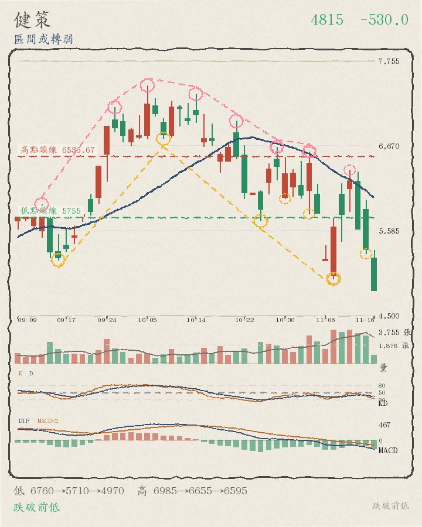
12:31 盤中 3745（+1.08%），比加權指數弱 1.48 個百分點、跌破月線 5550，離高點頸線 6536.67 還差 42.7%，轉折還沒走出明顯方向。
- 月線位置：現價 3745 在月線 5550 之下（-32.5%）；5 日線 4308 也在月線之下（短均在下）；月線向下
- 量能：以已過交易時間推估，今天成交量約是 20 日均量的 1.96 倍（爆量），比 20 日均量大不少；上漲又量增，量價配合
- 關鍵價位：已跌破前一個轉折低點；高點頸線 6536.67 還在現價上方 42.7%；前一交易日高點 3705（高於 1.1%）；今天盤中高點 3815（低於 1.8%）；今天盤中低點 3335（高於 12.3%）
- 轉折結構：低點 6760、5710、4970 與高點 6655、6595、6360 都沒有明顯遞增，屬於區間震盪或轉弱；還沒確認的轉折低點 11-18 4075、11-20 3705；還沒確認的轉折高點 11-11 6360、11-18 4765（圖上虛線小圈）
世芯-KY 3661 上市
3560 +320.0（+9.88%）
區間或轉弱 盤中成交值 139.8 億・全榜第 13 名（上市第 13 名）・相對大盤 +7.32
好條件 2/7：站上月線、攻擊量（量增＋上漲）
不好條件 1/7：月線下彎

12:31 盤中 3560（+9.88%），比加權指數強 7.32 個百分點、站上月線 3466，離高點頸線 3907.5 還差 8.9%，轉折還沒走出明顯方向。
- 月線位置：現價 3560 在月線 3466 之上（+2.7%）；5 日線 3609 也在月線之上（短均在上）；月線向下
- 量能：以已過交易時間推估，今天成交量約是 20 日均量的 1.77 倍（爆量），比 20 日均量大不少；上漲又量增，量價配合
- 關鍵價位：高點頸線 3907.5 還沒突破，差 8.9%；前一交易日高點 3475（高於 2.4%）；今天盤中高點 3560（高於 0.0%）；今天盤中低點 3210（高於 10.9%）
- 轉折結構：低點 3585、3260、2665 與高點 3835、3825、4085 都沒有明顯遞增，屬於區間震盪或轉弱；還沒確認的轉折低點 11-18 3440、11-20 3240；還沒確認的轉折高點 11-16 4085、11-19 4020（圖上虛線小圈）
日月光投控 3711 上市
482.5 +25.5（+5.58%）
區間或轉弱 盤中成交值 137.33 億・全榜第 14 名（上市第 14 名）・相對大盤 +3.02
好條件 1/7：攻擊量（量增＋上漲）
不好條件 3/7：跌破前低、在月線之下、月線下彎

12:31 盤中 482.5（+5.58%），比加權指數強 3.02 個百分點、跌破月線 595.65，離高點頸線 704 還差 31.5%，轉折還沒走出明顯方向。
- 月線位置：現價 482.5 在月線 595.65 之下（-19.0%）；5 日線 515.8 也在月線之下（短均在下）；月線向下
- 量能：以已過交易時間推估，今天成交量約是 20 日均量的 1.41 倍（量增），比 20 日均量大不少；上漲又量增，量價配合
- 關鍵價位：已跌破前一個轉折低點；高點頸線 704 還在現價上方 31.5%；前一交易日高點 483（低於 0.1%）；今天盤中高點 494.5（低於 2.4%）；今天盤中低點 451（高於 7.0%）
- 轉折結構：低點 715、639、515 與高點 699、709、630 都沒有明顯遞增，屬於區間震盪或轉弱；還沒確認的轉折低點 11-17 506、11-20 454；還沒確認的轉折高點 11-12 630、11-18 565（圖上虛線小圈）
奇鋐 3017 上市
2375 +170.0（+7.71%）
區間或轉弱 盤中成交值 136.4 億・全榜第 15 名（上市第 15 名）・相對大盤 +5.15
好條件 1/7：攻擊量（量增＋上漲）
不好條件 2/7：在月線之下、月線下彎

12:31 盤中 2375（+7.71%），比加權指數強 5.15 個百分點、跌破月線 2807，離高點頸線 3631.67 還差 34.6%，轉折還沒走出明顯方向。
- 月線位置：現價 2375 在月線 2807 之下（-15.4%）；5 日線 2515 也在月線之下（短均在下）；月線向下
- 量能：以已過交易時間推估，今天成交量約是 20 日均量的 2.20 倍（爆量），比 20 日均量大不少；上漲又量增，量價配合
- 關鍵價位：高點頸線 3631.67 還沒突破，差 34.6%；前一交易日高點 2280（高於 4.2%）；今天盤中高點 2405（低於 1.2%）；今天盤中低點 2005（高於 18.5%）
- 轉折結構：低點 3050、2310、2310 與高點 3700、3450、3060 都沒有明顯遞增，屬於區間震盪或轉弱；還沒確認的轉折低點 11-18 2440、11-20 2205；還沒確認的轉折高點 11-12 3060、11-18 2715（圖上虛線小圈）
大立光 3008 上市
3650 -20.0（-0.54%）
區間或轉弱 盤中成交值 126.11 億・全榜第 16 名（上市第 16 名）・相對大盤 -3.10
好條件 0/7：無
不好條件 5/7：跌破前低、今日下跌、相對大盤弱、在月線之下、月線下彎

12:31 盤中 3650（-0.54%），比加權指數弱 3.10 個百分點、跌破月線 5062，轉折還沒走出明顯方向。
- 月線位置：現價 3650 在月線 5062 之下（-27.9%）；5 日線 4271 也在月線之下（短均在下）；月線向下
- 量能：以已過交易時間推估，今天成交量約是 20 日均量的 1.91 倍（爆量），比 20 日均量大不少；下跌卻量增，量價背離
- 關鍵價位：前一交易日高點 3780（低於 3.4%）；今天盤中高點 3765（低於 3.1%）；今天盤中低點 3400（高於 7.4%）
- 轉折結構：低點 6355、5970、4075 與高點 7460、6370、5560 都沒有明顯遞增，屬於區間震盪或轉弱；還沒確認的轉折低點 11-06 4075、11-20 3585；還沒確認的轉折高點 11-13 5560、11-18 4820（圖上虛線小圈）
鴻海 2317 上市
207.5 -2.5（-1.19%）
區間或轉弱 盤中成交值 122.76 億・全榜第 17 名（上市第 17 名）・相對大盤 -3.75
好條件 0/7：無
不好條件 6/7：跌破前低、今日下跌、相對大盤弱、在月線之下、跌破昨日低點、月線下彎

12:31 盤中 207.5（-1.19%），比加權指數弱 3.75 個百分點、跌破月線 236.3，離高點頸線 246.25 還差 15.7%，轉折還沒走出明顯方向。
- 月線位置：現價 207.5 在月線 236.3 之下（-12.2%）；5 日線 217.8 也在月線之下（短均在下）；月線向下
- 量能：以已過交易時間推估，今天成交量約是 20 日均量的 1.66 倍（爆量），比 20 日均量大不少；下跌卻量增，量價背離
- 關鍵價位：已跌破前一個轉折低點；高點頸線 246.25 還在現價上方 15.7%；前一交易日高點 217（低於 4.4%）；今天盤中高點 214.5（低於 3.3%）；今天盤中低點 205（高於 1.2%）
- 轉折結構：低點 247、237、212.5 與高點 266.5、253.5、247.5 都沒有明顯遞增，屬於區間震盪或轉弱；還沒確認的轉折低點 11-18 215、11-20 208；還沒確認的轉折高點 11-12 245、11-19 225.5（圖上虛線小圈）
台燿 6274 上櫃
685 +62.0（+9.95%）
區間或轉弱 盤中成交值 121.82 億・全榜第 18 名（上櫃第 1 名）・相對大盤 +7.39
好條件 1/7：攻擊量（量增＋上漲）
不好條件 3/7：跌破前低、在月線之下、月線下彎

12:31 盤中 685（+9.95%），比加權指數強 7.39 個百分點、跌破月線 1037，離高點頸線 1446.67 還差 52.6%，轉折還沒走出明顯方向。
- 月線位置：現價 685 在月線 1037 之下（-33.9%）；5 日線 750 也在月線之下（短均在下）；月線向下
- 量能：以已過交易時間推估，今天成交量約是 20 日均量的 1.79 倍（爆量），比 20 日均量大不少；上漲又量增，量價配合
- 關鍵價位：已跌破前一個轉折低點；高點頸線 1446.67 還在現價上方 52.6%；前一交易日高點 623（高於 10.0%）；今天盤中高點 685（高於 0.0%）；今天盤中低點 585（高於 17.1%）
- 轉折結構：低點 1295、1275、897 與高點 1835、1450、1080 都沒有明顯遞增，屬於區間震盪或轉弱；還沒確認的轉折低點 11-12 954、11-20 623；還沒確認的轉折高點 11-12 1080（圖上虛線小圈）
穩懋 3105 上櫃
402.5 +21.5（+5.64%）
區間或轉弱 盤中成交值 117.85 億・全榜第 19 名（上櫃第 2 名）・相對大盤 +3.08
好條件 1/7：攻擊量（量增＋上漲）
不好條件 3/7：跌破前低、在月線之下、月線下彎
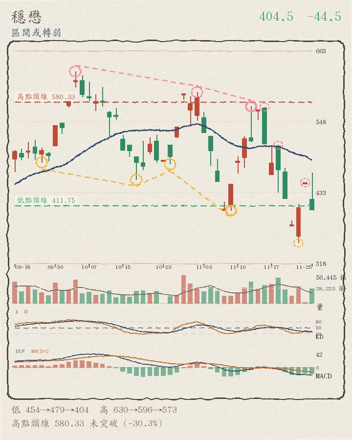
12:31 盤中 402.5（+5.64%），比加權指數強 3.08 個百分點、跌破月線 498.45，離高點頸線 580.33 還差 30.6%，轉折還沒走出明顯方向。
- 月線位置：現價 402.5 在月線 498.45 之下（-19.2%）；5 日線 453.4 也在月線之下（短均在下）；月線向下
- 量能：以已過交易時間推估，今天成交量約是 20 日均量的 1.26 倍（量增），比 20 日均量大不少；上漲又量增，量價配合
- 關鍵價位：已跌破前一個轉折低點；高點頸線 580.33 還在現價上方 30.6%；前一交易日高點 387.5（高於 3.9%）；今天盤中高點 414（低於 2.8%）；今天盤中低點 351（高於 14.7%）
- 轉折結構：低點 454、479、403.5 與高點 630、596、573 都沒有明顯遞增，屬於區間震盪或轉弱；還沒確認的轉折低點 11-09 403.5、11-20 381；還沒確認的轉折高點 11-16 572、11-18 510（圖上虛線小圈）
南電 8046 上市
671 +42.0（+6.68%）
區間或轉弱 盤中成交值 114.98 億・全榜第 20 名（上市第 18 名）・相對大盤 +4.12
好條件 1/7：攻擊量（量增＋上漲）
不好條件 3/7：跌破前低、在月線之下、月線下彎

12:31 盤中 671（+6.68%），比加權指數強 4.12 個百分點、跌破月線 1009.15，離高點頸線 1102.5 還差 39.1%，轉折還沒走出明顯方向。
- 月線位置：現價 671 在月線 1009.15 之下（-33.5%）；5 日線 754.8 也在月線之下（短均在下）；月線向下
- 量能：以已過交易時間推估，今天成交量約是 20 日均量的 2.05 倍（爆量），比 20 日均量大不少；上漲又量增，量價配合
- 關鍵價位：已跌破前一個轉折低點；高點頸線 1102.5 還在現價上方 39.1%；前一交易日高點 637（高於 5.3%）；今天盤中高點 686（低於 2.2%）；今天盤中低點 569（高於 17.9%）
- 轉折結構：低點 1025、1050、867 與高點 1560、1400、1080 都沒有明顯遞增，屬於區間震盪或轉弱；還沒確認的轉折低點 11-12 972、11-20 629；還沒確認的轉折高點 11-11 1080、11-18 846（圖上虛線小圈）
金像電 2368 上市
782 +71.0（+9.99%）
區間或轉弱 盤中成交值 114.93 億・全榜第 21 名（上市第 19 名）・相對大盤 +7.43
好條件 1/7：攻擊量（量增＋上漲）
不好條件 2/7：在月線之下、月線下彎

12:31 盤中 782（+9.99%），比加權指數強 7.43 個百分點、跌破月線 963.1，離高點頸線 1085 還差 27.9%，轉折還沒走出明顯方向。
- 月線位置：現價 782 在月線 963.1 之下（-18.8%）；5 日線 828 也在月線之下（短均在下）；月線向下
- 量能：以已過交易時間推估，今天成交量約是 20 日均量的 1.87 倍（爆量），比 20 日均量大不少；上漲又量增，量價配合
- 關鍵價位：高點頸線 1085 還沒突破，差 27.9%；前一交易日高點 720（高於 8.6%）；今天盤中高點 782（高於 0.0%）；今天盤中低點 657（高於 19.0%）
- 轉折結構：低點 950、1120、782 與高點 1295、1190、1085 都沒有明顯遞增，屬於區間震盪或轉弱；還沒確認的轉折低點 11-12 968、11-20 711；還沒確認的轉折高點 11-12 1085、11-18 906（圖上虛線小圈）
聯茂 6213 上市
391 +35.5（+9.99%）
區間或轉弱 盤中成交值 102.42 億・全榜第 22 名（上市第 20 名）・相對大盤 +7.43
好條件 1/7：攻擊量（量增＋上漲）
不好條件 3/7：跌破前低、在月線之下、月線下彎
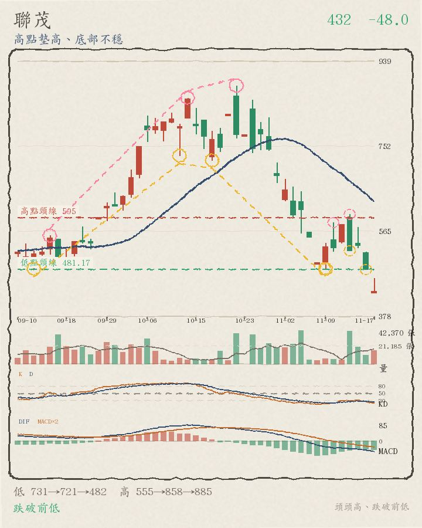
12:31 盤中 391（+9.99%），比加權指數強 7.43 個百分點、跌破月線 572.15，離高點頸線 595 還差 34.3%，轉折還沒走出明顯方向。
- 月線位置：現價 391 在月線 572.15 之下（-31.7%）；5 日線 420.2 也在月線之下（短均在下）；月線向下
- 量能：以已過交易時間推估，今天成交量約是 20 日均量的 1.67 倍（爆量），比 20 日均量大不少；上漲又量增，量價配合
- 關鍵價位：已跌破前一個轉折低點；高點頸線 595 還在現價上方 34.3%；前一交易日高點 355.5（高於 10.0%）；今天盤中高點 391（高於 0.0%）；今天盤中低點 321.5（高於 21.6%）
- 轉折結構：低點 731、721、481.5 與高點 858、885、602 都沒有明顯遞增，屬於區間震盪或轉弱；還沒確認的轉折低點 11-12 522、11-20 355.5；還沒確認的轉折高點 11-10 584、11-12 602（圖上虛線小圈）
華邦電 2344 上市
95.7 +6.5（+7.29%）
區間或轉弱 盤中成交值 101.19 億・全榜第 23 名（上市第 21 名）・相對大盤 +4.73
好條件 1/7：攻擊量（量增＋上漲）
不好條件 3/7：跌破前低、在月線之下、月線下彎

12:31 盤中 95.7（+7.29%），比加權指數強 4.73 個百分點、跌破月線 134.86，離高點頸線 141.5 還差 32.4%，轉折還沒走出明顯方向。
- 月線位置：現價 95.7 在月線 134.86 之下（-29.0%）；5 日線 103.74 也在月線之下（短均在下）；月線向下
- 量能：以已過交易時間推估，今天成交量約是 20 日均量的 1.98 倍（爆量），比 20 日均量大不少；上漲又量增，量價配合
- 關鍵價位：已跌破前一個轉折低點；高點頸線 141.5 還在現價上方 32.4%；前一交易日高點 93.3（高於 2.6%）；今天盤中高點 98（低於 2.3%）；今天盤中低點 88.3（高於 8.4%）
- 轉折結構：低點 151、151、115 與高點 184、178.5、142 都沒有明顯遞增，屬於區間震盪或轉弱；還沒確認的轉折低點 11-11 127、11-20 88.2；還沒確認的轉折高點 11-12 141、11-18 115（圖上虛線小圈）
台玻 1802 上市
56.9 +4.0（+7.56%）
區間或轉弱 盤中成交值 95.2 億・全榜第 24 名（上市第 22 名）・相對大盤 +5.00
好條件 1/7：攻擊量（量增＋上漲）
不好條件 2/7：在月線之下、月線下彎

12:31 盤中 56.9（+7.56%），比加權指數強 5.00 個百分點、跌破月線 66.87，離高點頸線 62.47 還差 8.9%，轉折還沒走出明顯方向。
- 月線位置：現價 56.9 在月線 66.87 之下（-14.9%）；5 日線 64.48 也在月線之下（短均在下）；月線向下
- 量能：以已過交易時間推估，今天成交量約是 20 日均量的 1.12 倍（量增），比 20 日均量大一些；上漲又量增，量價配合
- 關鍵價位：高點頸線 62.47 還沒突破，差 8.9%；前一交易日高點 55（高於 3.5%）；今天盤中高點 58（低於 1.9%）；今天盤中低點 49.5（高於 14.9%）
- 轉折結構：低點 56.6、58.8、54.1 與高點 73.6、70、89.5 都沒有明顯遞增，屬於區間震盪或轉弱；還沒確認的轉折低點 11-06 54.1、11-20 52.9；還沒確認的轉折高點 11-13 89.5（圖上虛線小圈）
量增
↑ 回上方清單
智邦 2345 上市
1350 +120.0（+9.76%）
區間或轉弱 盤中成交值 90.68 億・全榜第 25 名（上市第 23 名）・相對大盤 +7.20
好條件 1/7：攻擊量（量增＋上漲）
不好條件 2/7：在月線之下、月線下彎
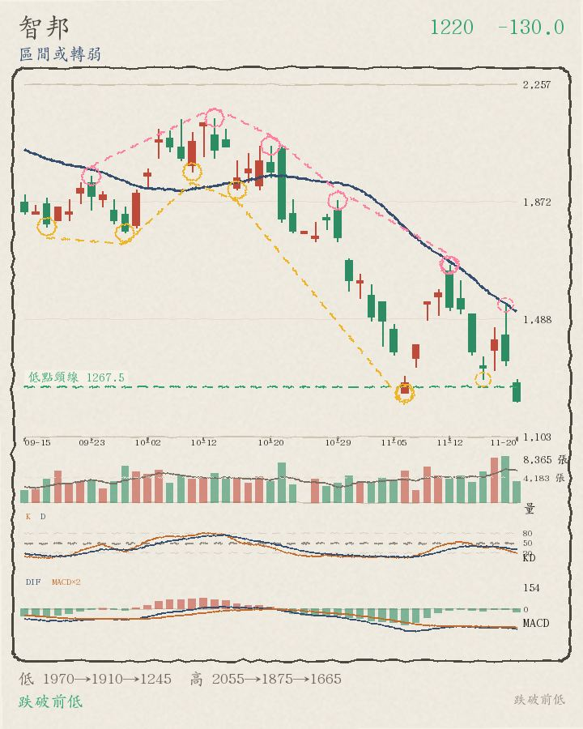
12:31 盤中 1350（+9.76%），比加權指數強 7.20 個百分點、跌破月線 1512.5，轉折還沒走出明顯方向。
- 月線位置：現價 1350 在月線 1512.5 之下（-10.7%）；5 日線 1342 也在月線之下（短均在下）；月線向下
- 量能：以已過交易時間推估，今天成交量約是 20 日均量的 1.87 倍（爆量），比 20 日均量大不少；上漲又量增，量價配合
- 關鍵價位：前一交易日高點 1290（高於 4.7%）；今天盤中高點 1350（高於 0.0%）；今天盤中低點 1200（高於 12.5%）
- 轉折結構：低點 1970、1910、1245 與高點 2055、1875、1665 都沒有明顯遞增，屬於區間震盪或轉弱；還沒確認的轉折低點 11-17 1290、11-20 1215；還沒確認的轉折高點 11-12 1665、11-19 1535（圖上虛線小圈）
臻鼎-KY 4958 上市
328.5 +18.5（+5.97%）
區間或轉弱 盤中成交值 85.29 億・全榜第 26 名（上市第 24 名）・相對大盤 +3.41
好條件 1/7：攻擊量（量增＋上漲）
不好條件 3/7：跌破前低、在月線之下、月線下彎

12:31 盤中 328.5（+5.97%），比加權指數強 3.41 個百分點、跌破月線 436.75，離高點頸線 613.5 還差 46.5%，轉折還沒走出明顯方向。
- 月線位置：現價 328.5 在月線 436.75 之下（-24.8%）；5 日線 360.5 也在月線之下（短均在下）；月線向下
- 量能：以已過交易時間推估，今天成交量約是 20 日均量的 1.20 倍（量增），比 20 日均量大不少；上漲又量增，量價配合
- 關鍵價位：已跌破前一個轉折低點；高點頸線 613.5 還在現價上方 46.5%；前一交易日高點 325.5（高於 0.9%）；今天盤中高點 334.5（低於 1.8%）；今天盤中低點 290（高於 13.3%）
- 轉折結構：低點 463.5、518、355 與高點 613、614、466.5 都沒有明顯遞增，屬於區間震盪或轉弱；還沒確認的轉折低點 11-12 429、11-20 310；還沒確認的轉折高點 11-12 466.5、11-18 397（圖上虛線小圈）
群聯 8299 上櫃
1450 +130.0（+9.85%）
區間或轉弱 盤中成交值 84.19 億・全榜第 27 名（上櫃第 3 名）・相對大盤 +7.29
好條件 1/7：攻擊量（量增＋上漲）
不好條件 2/7：在月線之下、月線下彎

12:31 盤中 1450（+9.85%），比加權指數強 7.29 個百分點、跌破月線 1691，離高點頸線 1762.5 還差 17.7%，轉折還沒走出明顯方向。
- 月線位置：現價 1450 在月線 1691 之下（-14.2%）；5 日線 1469 也在月線之下（短均在下）；月線向下
- 量能：以已過交易時間推估，今天成交量約是 20 日均量的 1.99 倍（爆量），比 20 日均量大不少；上漲又量增，量價配合
- 關鍵價位：高點頸線 1762.5 還沒突破，差 17.7%；前一交易日高點 1435（高於 1.0%）；今天盤中高點 1450（高於 0.0%）；今天盤中低點 1260（高於 15.1%）
- 轉折結構：低點 1785、1865、1405 與高點 2350、2090、1765 都沒有明顯遞增，屬於區間震盪或轉弱；還沒確認的轉折低點 11-17 1430、11-20 1310；還沒確認的轉折高點 11-12 1765、11-18 1625（圖上虛線小圈）
聯亞 3081 上櫃
1375 +10.0（+0.73%）
區間或轉弱 盤中成交值 73.71 億・全榜第 28 名（上櫃第 4 名）・相對大盤 -1.83
好條件 1/7：攻擊量（量增＋上漲）
不好條件 4/7：跌破前低、相對大盤弱、在月線之下、月線下彎

12:31 盤中 1375（+0.73%），比加權指數弱 1.83 個百分點、跌破月線 2068.25，離高點頸線 2940 還差 53.2%，轉折還沒走出明顯方向。
- 月線位置：現價 1375 在月線 2068.25 之下（-33.5%）；5 日線 1634 也在月線之下（短均在下）；月線向下
- 量能：以已過交易時間推估，今天成交量約是 20 日均量的 1.99 倍（爆量），比 20 日均量大不少；上漲又量增，量價配合
- 關鍵價位：已跌破前一個轉折低點；高點頸線 2940 還在現價上方 53.2%；前一交易日高點 1365（高於 0.7%）；今天盤中高點 1415（低於 2.8%）；今天盤中低點 1230（高於 11.8%）
- 轉折結構：低點 2585、2365、1705 與高點 3210、2795、2320 都沒有明顯遞增，屬於區間震盪或轉弱；還沒確認的轉折低點 11-06 1705、11-20 1365；還沒確認的轉折高點 11-12 2320（圖上虛線小圈）
旺矽 6223 上櫃
3875 +315.0（+8.85%）
區間或轉弱 盤中成交值 66.84 億・全榜第 29 名（上櫃第 5 名）・相對大盤 +6.29
好條件 1/7：攻擊量（量增＋上漲）
不好條件 2/7：在月線之下、月線下彎

12:31 盤中 3875（+8.85%），比加權指數強 6.29 個百分點、跌破月線 4309.25，離高點頸線 5125 還差 24.4%，轉折還沒走出明顯方向。
- 月線位置：現價 3875 在月線 4309.25 之下（-10.1%）；5 日線 4041 也在月線之下（短均在下）；月線向下
- 量能：以已過交易時間推估，今天成交量約是 20 日均量的 1.93 倍（爆量），比 20 日均量大不少；上漲又量增，量價配合
- 關鍵價位：高點頸線 5125 還沒突破，差 24.4%；前一交易日高點 3685（高於 5.2%）；今天盤中高點 3915（低於 1.0%）；今天盤中低點 3250（高於 19.2%）
- 轉折結構：低點 5090、4995、3355 與高點 6160、5150、5100 都沒有明顯遞增，屬於區間震盪或轉弱；還沒確認的轉折低點 11-18 3880、11-20 3560；還沒確認的轉折高點 11-13 5100、11-18 4390（圖上虛線小圈）
富喬 1815 上櫃
102 +3.0（+3.03%）
區間或轉弱 盤中成交值 64.69 億・全榜第 30 名（上櫃第 6 名）・相對大盤 +0.47
好條件 0/7：無
不好條件 3/7：跌破前低、在月線之下、月線下彎

12:31 盤中 102（+3.03%），比加權指數強 0.47 個百分點、跌破月線 128.9，離高點頸線 144.33 還差 29.3%，轉折還沒走出明顯方向。
- 月線位置：現價 102 在月線 128.9 之下（-20.9%）；5 日線 116 也在月線之下（短均在下）；月線向下
- 量能：以已過交易時間推估，今天成交量約是 20 日均量的 0.69 倍（量縮），比 20 日均量少很多；上漲但量縮，量價背離
- 關鍵價位：已跌破前一個轉折低點；高點頸線 144.33 還在現價上方 29.3%；前一交易日高點 102（高於 0.0%）；今天盤中高點 104.5（低於 2.4%）；今天盤中低點 90.4（高於 12.8%）
- 轉折結構：低點 113、124、109.5 與高點 149、143.5、150.5 都沒有明顯遞增，屬於區間震盪或轉弱；還沒確認的轉折低點 11-18 110、11-20 99；還沒確認的轉折高點 11-10 140.5、11-12 150.5（圖上虛線小圈）
緯穎 6669 上市
1375 +50.0（+3.77%）
區間或轉弱 盤中成交值 60.6 億・全榜第 31 名（上市第 25 名）・相對大盤 +1.21
好條件 1/7：攻擊量（量增＋上漲）
不好條件 3/7：跌破前低、在月線之下、月線下彎

12:31 盤中 1375（+3.77%），比加權指數強 1.21 個百分點、跌破月線 1670，離高點頸線 1722.5 還差 20.2%，轉折還沒走出明顯方向。
- 月線位置：現價 1375 在月線 1670 之下（-17.7%）；5 日線 1435 也在月線之下（短均在下）；月線向下
- 量能：以已過交易時間推估，今天成交量約是 20 日均量的 1.38 倍（量增），比 20 日均量大不少；上漲又量增，量價配合
- 關鍵價位：已跌破前一個轉折低點；高點頸線 1722.5 還在現價上方 20.2%；前一交易日高點 1360（高於 1.1%）；今天盤中高點 1410（低於 2.5%）；今天盤中低點 1275（高於 7.8%）
- 轉折結構：低點 2080、1795、1485 與高點 2335、2020、1990 都沒有明顯遞增，屬於區間震盪或轉弱；還沒確認的轉折低點 11-17 1425、11-20 1290；還沒確認的轉折高點 11-12 1715、11-18 1505（圖上虛線小圈）
貿聯-KY 3665 上市
1430 +130.0（+10.00%）
區間或轉弱 盤中成交值 59.96 億・全榜第 32 名（上市第 26 名）・相對大盤 +7.44
好條件 1/7：攻擊量（量增＋上漲）
不好條件 2/7：在月線之下、月線下彎

12:31 盤中 1430（+10.00%），比加權指數強 7.44 個百分點、跌破月線 1552.5，離高點頸線 1610 還差 11.2%，轉折還沒走出明顯方向。
- 月線位置：現價 1430 在月線 1552.5 之下（-7.9%）；5 日線 1434 也在月線之下（短均在下）；月線向下
- 量能：以已過交易時間推估，今天成交量約是 20 日均量的 1.42 倍（量增），比 20 日均量大不少；上漲又量增，量價配合
- 關鍵價位：高點頸線 1610 還沒突破，差 11.2%；前一交易日高點 1350（高於 5.9%）；今天盤中高點 1430（高於 0.0%）；今天盤中低點 1240（高於 15.3%）
- 轉折結構：低點 1930、1810、1295 與高點 2685、2080、1630 都沒有明顯遞增，屬於區間震盪或轉弱；還沒確認的轉折低點 11-17 1365、11-20 1300；還沒確認的轉折高點 11-12 1630、11-19 1590（圖上虛線小圈）
量增
↑ 回上方清單
致茂 2360 上市
922 -5.0（-0.54%）
區間或轉弱 盤中成交值 56.88 億・全榜第 33 名（上市第 27 名）・相對大盤 -3.10
好條件 0/7：無
不好條件 6/7：跌破前低、今日下跌、相對大盤弱、在月線之下、跌破昨日低點、月線下彎

12:31 盤中 922（-0.54%），比加權指數弱 3.10 個百分點、跌破月線 1459.1，離高點頸線 2090 還差 55.9%，轉折還沒走出明顯方向。
- 月線位置：現價 922 在月線 1459.1 之下（-36.8%）；5 日線 1098.4 也在月線之下（短均在下）；月線向下
- 量能：以已過交易時間推估，今天成交量約是 20 日均量的 2.16 倍（爆量），比 20 日均量大不少；下跌卻量增，量價背離
- 關鍵價位：已跌破前一個轉折低點；高點頸線 2090 還在現價上方 55.9%；前一交易日高點 927（低於 0.5%）；今天盤中高點 944（低於 2.3%）；今天盤中低點 835（高於 10.4%）
- 轉折結構：低點 2025、1945、1190 與高點 2110、2070、1505 都沒有明顯遞增，屬於區間震盪或轉弱；還沒確認的轉折低點 11-09 1190、11-20 927；還沒確認的轉折高點 11-12 1505（圖上虛線小圈）
精材 3374 上櫃
326 +6.5（+2.03%）
區間或轉弱 盤中成交值 54.78 億・全榜第 34 名（上櫃第 7 名）・相對大盤 -0.53
好條件 1/7：攻擊量（量增＋上漲）
不好條件 4/7：跌破前低、相對大盤弱、在月線之下、月線下彎

12:31 盤中 326（+2.03%），比加權指數弱 0.53 個百分點、跌破月線 438.575，離高點頸線 520.67 還差 37.4%，轉折還沒走出明顯方向。
- 月線位置：現價 326 在月線 438.575 之下（-25.7%）；5 日線 391.4 也在月線之下（短均在下）；月線向下
- 量能：以已過交易時間推估，今天成交量約是 20 日均量的 1.35 倍（量增），比 20 日均量大不少；上漲又量增，量價配合
- 關鍵價位：已跌破前一個轉折低點；高點頸線 520.67 還在現價上方 37.4%；前一交易日高點 325（高於 0.3%）；今天盤中高點 335.5（低於 2.8%）；今天盤中低點 291.5（高於 11.8%）
- 轉折結構：低點 436.5、399、362.5 與高點 530、513、519 都沒有明顯遞增，屬於區間震盪或轉弱；還沒確認的轉折低點 11-06 362.5、11-20 319.5；還沒確認的轉折高點 11-13 519（圖上虛線小圈）
玉晶光 3406 上市
674 +26.0（+4.01%）
區間或轉弱 盤中成交值 53.28 億・全榜第 35 名（上市第 28 名）・相對大盤 +1.45
好條件 1/7：攻擊量（量增＋上漲）
不好條件 3/7：跌破前低、在月線之下、月線下彎
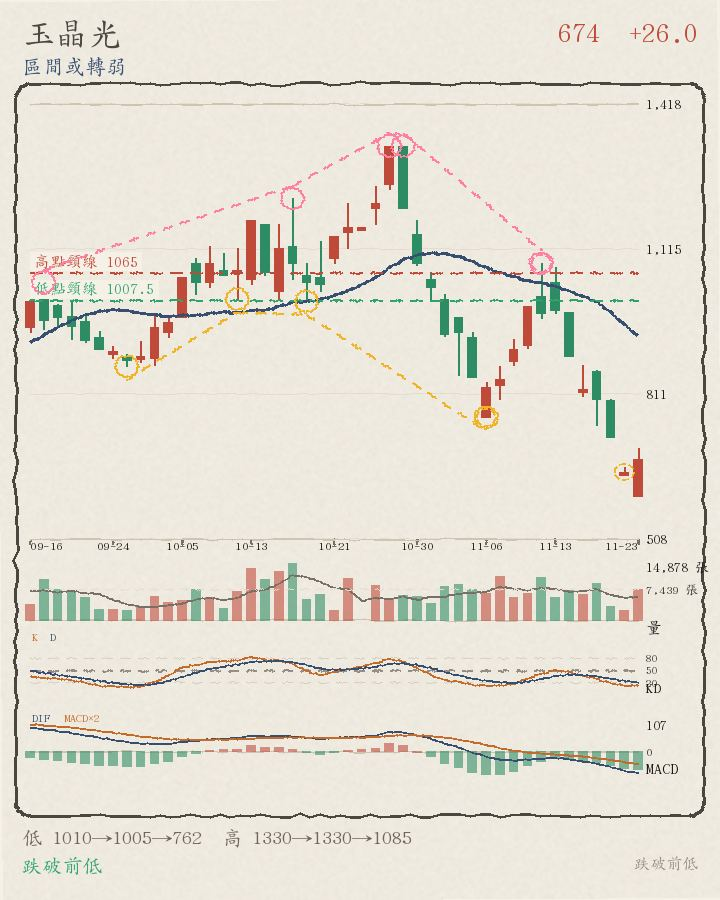
12:31 盤中 674（+4.01%），比加權指數強 1.45 個百分點、跌破月線 957.55，離高點頸線 1065 還差 36.7%，轉折還沒走出明顯方向。
- 月線位置：現價 674 在月線 957.55 之下（-29.6%）；5 日線 775.4 也在月線之下（短均在下）；月線向下
- 量能：以已過交易時間推估，今天成交量約是 20 日均量的 1.34 倍（量增），比 20 日均量大不少；上漲又量增，量價配合
- 關鍵價位：已跌破前一個轉折低點；高點頸線 1065 還在現價上方 36.7%；前一交易日高點 657（高於 2.6%）；今天盤中高點 697（低於 3.3%）；今天盤中低點 596（高於 13.1%）
- 轉折結構：低點 1010、1005、762 與高點 1330、1330、1085 都沒有明顯遞增，屬於區間震盪或轉弱；還沒確認的轉折低點 11-06 762、11-20 648；還沒確認的轉折高點 11-12 1085（圖上虛線小圈）
中信金 2891 上市
63.9 -4.1（-6.03%）
區間或轉弱 盤中成交值 51.84 億・全榜第 36 名（上市第 29 名）・相對大盤 -8.59
好條件 1/7：月線向上
不好條件 5/7：跌破前低、今日下跌、相對大盤弱、在月線之下、跌破昨日低點

12:31 盤中 63.9（-6.03%），比加權指數弱 8.59 個百分點、跌破月線 74.655，離高點頸線 75.96 還差 15.9%，轉折還沒走出明顯方向。
- 月線位置：現價 63.9 在月線 74.655 之下（-14.4%）；5 日線 73.76 也在月線之下（短均在下）；月線向上
- 量能：以已過交易時間推估，今天成交量約是 20 日均量的 2.15 倍（爆量），比 20 日均量大不少；下跌卻量增，量價背離
- 關鍵價位：已跌破前一個轉折低點；高點頸線 75.96 還在現價上方 15.9%；前一交易日高點 72.5（低於 11.9%）；今天盤中高點 66.2（低於 3.5%）；今天盤中低點 61.5（高於 3.9%）
- 轉折結構：低點 67.3、73.8、67.5 與高點 76.4、76.2、80.6 都沒有明顯遞增，屬於區間震盪或轉弱；還沒確認的轉折低點 11-11 72.6、11-20 66.3；還沒確認的轉折高點 11-09 76.2、11-16 80.6（圖上虛線小圈）
群創 3481 上市
30.35 +0.4（+1.34%）
區間或轉弱 盤中成交值 51.21 億・全榜第 37 名（上市第 30 名）・相對大盤 -1.22
好條件 1/7：攻擊量（量增＋上漲）
不好條件 4/7：跌破前低、相對大盤弱、在月線之下、月線下彎

12:31 盤中 30.35（+1.34%），比加權指數弱 1.22 個百分點、跌破月線 40，轉折還沒走出明顯方向。
- 月線位置：現價 30.35 在月線 40 之下（-24.1%）；5 日線 34.21 也在月線之下（短均在下）；月線向下
- 量能：以已過交易時間推估，今天成交量約是 20 日均量的 1.43 倍（量增），比 20 日均量大不少；上漲又量增，量價配合
- 關鍵價位：前一交易日高點 31.55（低於 3.8%）；今天盤中高點 31.05（低於 2.3%）；今天盤中低點 28.95（高於 4.8%）
- 轉折結構：低點 48.55、45.65、34.2 與高點 56.2、49.7、43.3 都沒有明顯遞增，屬於區間震盪或轉弱；還沒確認的轉折低點 11-12 38.85、11-20 29.7；還沒確認的轉折高點 11-12 43.3、11-18 37（圖上虛線小圈）
鴻勁 7769 上市
2905 +15.0（+0.52%）
區間或轉弱 盤中成交值 50.66 億・全榜第 38 名（上市第 31 名）・相對大盤 -2.04
好條件 1/7：攻擊量（量增＋上漲）
不好條件 4/7：跌破前低、相對大盤弱、在月線之下、月線下彎
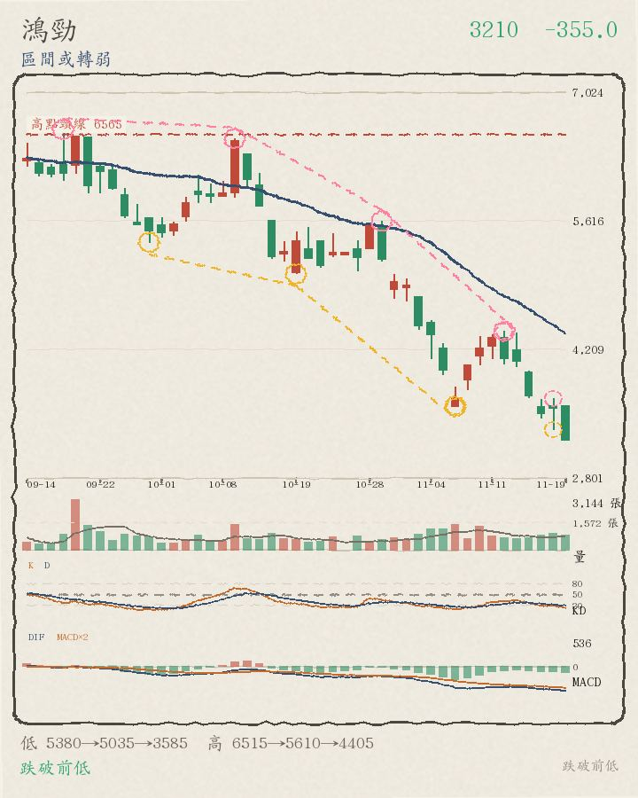
12:31 盤中 2905（+0.52%），比加權指數弱 2.04 個百分點、跌破月線 4262.25，離高點頸線 6565 還差 55.8%，轉折還沒走出明顯方向。
- 月線位置：現價 2905 在月線 4262.25 之下（-31.8%）；5 日線 3373 也在月線之下（短均在下）；月線向下
- 量能：以已過交易時間推估，今天成交量約是 20 日均量的 2.45 倍（爆量），比 20 日均量大不少；上漲又量增，量價配合
- 關鍵價位：已跌破前一個轉折低點；高點頸線 6565 還在現價上方 55.8%；前一交易日高點 3040（低於 4.4%）；今天盤中高點 2955（低於 1.7%）；今天盤中低點 2680（高於 8.4%）
- 轉折結構：低點 5380、5035、3585 與高點 6515、5610、4405 都沒有明顯遞增，屬於區間震盪或轉弱；還沒確認的轉折低點 11-06 3585、11-20 2890；還沒確認的轉折高點 11-12 4405、11-18 3670（圖上虛線小圈）
華通 2313 上市
153.5 +1.0（+0.66%）
區間或轉弱 盤中成交值 49.32 億・全榜第 39 名（上市第 32 名）・相對大盤 -1.90
好條件 1/7：攻擊量（量增＋上漲）
不好條件 3/7：相對大盤弱、在月線之下、月線下彎

12:31 盤中 153.5（+0.66%），比加權指數弱 1.90 個百分點、跌破月線 190.775，離高點頸線 261.67 還差 41.3%，轉折還沒走出明顯方向。
- 月線位置：現價 153.5 在月線 190.775 之下（-19.5%）；5 日線 177.3 也在月線之下（短均在下）；月線向下
- 量能：以已過交易時間推估，今天成交量約是 20 日均量的 1.30 倍（量增），比 20 日均量大不少；上漲又量增，量價配合
- 關鍵價位：高點頸線 261.67 還沒突破，差 41.3%；前一交易日高點 159（低於 3.5%）；今天盤中高點 156（低於 1.6%）；今天盤中低點 139.5（高於 10.0%）
- 轉折結構：低點 219、228、149 與高點 261、266、215.5 都沒有明顯遞增，屬於區間震盪或轉弱；還沒確認的轉折低點 11-18 168.5、11-20 152.5；還沒確認的轉折高點 11-13 215.5、11-18 194.5（圖上虛線小圈）
量增
↑ 回上方清單
力積電 6770 上市
48.5 +4.4（+9.98%）
區間或轉弱 盤中成交值 49.25 億・全榜第 40 名（上市第 33 名）・相對大盤 +7.42
好條件 1/7：攻擊量（量增＋上漲）
不好條件 3/7：跌破前低、在月線之下、月線下彎

12:31 盤中 48.5（+9.98%），比加權指數強 7.42 個百分點、跌破月線 58.74，離高點頸線 73.85 還差 34.3%，轉折還沒走出明顯方向。
- 月線位置：現價 48.5 在月線 58.74 之下（-17.4%）；5 日線 50.02 也在月線之下（短均在下）；月線向下
- 量能：以已過交易時間推估，今天成交量約是 20 日均量的 1.20 倍（量增），比 20 日均量大不少；上漲又量增，量價配合
- 關鍵價位：已跌破前一個轉折低點；高點頸線 73.85 還在現價上方 34.3%；前一交易日高點 47.25（高於 2.6%）；今天盤中高點 48.5（高於 0.0%）；今天盤中低點 43.7（高於 11.0%）
- 轉折結構：低點 70.5、63、49.35 與高點 78.1、73、63 都沒有明顯遞增，屬於區間震盪或轉弱；還沒確認的轉折低點 11-11 55.9、11-20 44.05；還沒確認的轉折高點 11-12 60.4、11-18 54.1（圖上虛線小圈）
華新科 2492 上市
190 +2.5（+1.33%）
區間或轉弱 盤中成交值 49.06 億・全榜第 41 名（上市第 34 名）・相對大盤 -1.23
好條件 1/7：攻擊量（量增＋上漲）
不好條件 4/7：跌破前低、相對大盤弱、在月線之下、月線下彎

12:31 盤中 190（+1.33%），比加權指數弱 1.23 個百分點、跌破月線 300.275，離高點頸線 428.33 還差 55.6%，轉折還沒走出明顯方向。
- 月線位置：現價 190 在月線 300.275 之下（-36.7%）；5 日線 223.2 也在月線之下（短均在下）；月線向下
- 量能：以已過交易時間推估，今天成交量約是 20 日均量的 1.11 倍（量增），比 20 日均量大一些；上漲又量增，量價配合
- 關鍵價位：已跌破前一個轉折低點；高點頸線 428.33 還在現價上方 55.6%；前一交易日高點 196（低於 3.1%）；今天盤中高點 195（低於 2.6%）；今天盤中低點 172.5（高於 10.1%）
- 轉折結構：低點 376.5、355.5、253.5 與高點 422、431.5、307 都沒有明顯遞增，屬於區間震盪或轉弱；還沒確認的轉折低點 11-12 272、11-20 187.5；還沒確認的轉折高點 11-11 307（圖上虛線小圈）
雙鴻 3324 上櫃
778 -16.0（-2.02%）
區間或轉弱 盤中成交值 48.55 億・全榜第 42 名（上櫃第 8 名）・相對大盤 -4.58
好條件 0/7：無
不好條件 6/7：跌破前低、今日下跌、相對大盤弱、在月線之下、跌破昨日低點、月線下彎

12:31 盤中 778（-2.02%），比加權指數弱 4.58 個百分點、跌破月線 1188.6，離高點頸線 1511.67 還差 48.5%，轉折還沒走出明顯方向。
- 月線位置：現價 778 在月線 1188.6 之下（-34.5%）；5 日線 922.4 也在月線之下（短均在下）；月線向下
- 量能：以已過交易時間推估，今天成交量約是 20 日均量的 1.65 倍（爆量），比 20 日均量大不少；下跌卻量增，量價背離
- 關鍵價位：已跌破前一個轉折低點；高點頸線 1511.67 還在現價上方 48.5%；前一交易日高點 810（低於 4.0%）；今天盤中高點 792（低於 1.8%）；今天盤中低點 715（高於 8.8%）
- 轉折結構：低點 1320、1310、1050 與高點 1515、1515、1315 都沒有明顯遞增，屬於區間震盪或轉弱；還沒確認的轉折低點 11-09 1050、11-20 794；還沒確認的轉折高點 11-11 1315、11-18 1015（圖上虛線小圈）
環球晶 6488 上櫃
460.5 +19.0（+4.30%）
區間或轉弱 盤中成交值 46.6 億・全榜第 43 名（上櫃第 9 名）・相對大盤 +1.74
好條件 1/7：攻擊量（量增＋上漲）
不好條件 3/7：跌破前低、在月線之下、月線下彎

12:31 盤中 460.5（+4.30%），比加權指數強 1.74 個百分點、跌破月線 642.975，離高點頸線 1013.33 還差 54.6%，轉折還沒走出明顯方向。
- 月線位置：現價 460.5 在月線 642.975 之下（-28.4%）；5 日線 519.7 也在月線之下（短均在下）；月線向下
- 量能：以已過交易時間推估，今天成交量約是 20 日均量的 1.12 倍（量增），比 20 日均量大一些；上漲又量增，量價配合
- 關鍵價位：已跌破前一個轉折低點；高點頸線 1013.33 還在現價上方 54.6%；前一交易日高點 461.5（低於 0.2%）；今天盤中高點 471（低於 2.2%）；今天盤中低點 410.5（高於 12.2%）
- 轉折結構：低點 875、872、508 與高點 1010、1260、663 都沒有明顯遞增，屬於區間震盪或轉弱；還沒確認的轉折低點 11-06 508、11-20 441；還沒確認的轉折高點 11-12 663、11-18 577（圖上虛線小圈）
川湖 2059 上市
5645 +295.0（+5.51%）
區間或轉弱 盤中成交值 46.18 億・全榜第 44 名（上市第 35 名）・相對大盤 +2.95
好條件 1/7：攻擊量（量增＋上漲）
不好條件 3/7：跌破前低、在月線之下、月線下彎
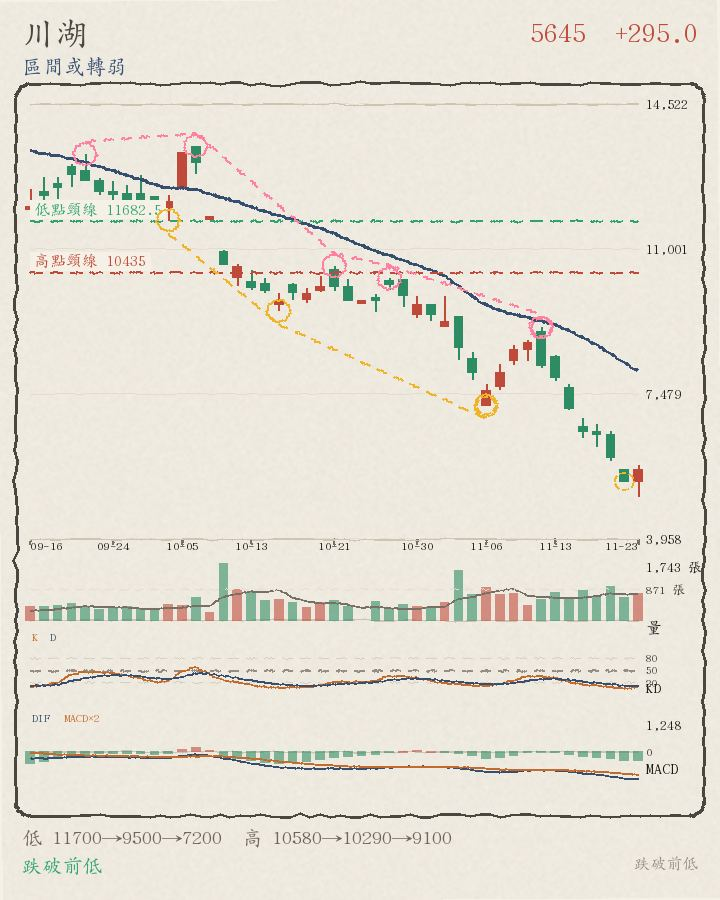
12:31 盤中 5645（+5.51%），比加權指數強 2.95 個百分點、跌破月線 8245.75，離高點頸線 10435 還差 45.9%，轉折還沒走出明顯方向。
- 月線位置：現價 5645 在月線 8245.75 之下（-31.5%）；5 日線 6300 也在月線之下（短均在下）；月線向下
- 量能：以已過交易時間推估，今天成交量約是 20 日均量的 1.52 倍（爆量），比 20 日均量大不少；上漲又量增，量價配合
- 關鍵價位：已跌破前一個轉折低點；高點頸線 10435 還在現價上方 45.9%；前一交易日高點 5640（高於 0.1%）；今天盤中高點 5735（低於 1.6%）；今天盤中低點 4980（高於 13.4%）
- 轉折結構：低點 11700、9500、7200 與高點 10580、10290、9100 都沒有明顯遞增，屬於區間震盪或轉弱；還沒確認的轉折低點 11-06 7200、11-20 5350；還沒確認的轉折高點 11-12 9100（圖上虛線小圈）
金居 8358 上櫃
242.5 -4.5（-1.82%）
區間或轉弱 盤中成交值 45.76 億・全榜第 45 名（上櫃第 10 名）・相對大盤 -4.38
好條件 0/7：無
不好條件 6/7：跌破前低、今日下跌、相對大盤弱、在月線之下、跌破昨日低點、月線下彎

12:31 盤中 242.5（-1.82%），比加權指數弱 4.38 個百分點、跌破月線 363.775，離高點頸線 571 還差 57.5%，轉折還沒走出明顯方向。
- 月線位置：現價 242.5 在月線 363.775 之下（-33.3%）；5 日線 296.7 也在月線之下（短均在下）；月線向下
- 量能：以已過交易時間推估，今天成交量約是 20 日均量的 1.90 倍（爆量），比 20 日均量大不少；下跌卻量增，量價背離
- 關鍵價位：已跌破前一個轉折低點；高點頸線 571 還在現價上方 57.5%；前一交易日高點 255（低於 4.9%）；今天盤中高點 250（低於 3.0%）；今天盤中低點 222.5（高於 9.0%）
- 轉折結構：低點 477、399.5、301 與高點 578、510、413 都沒有明顯遞增，屬於區間震盪或轉弱；還沒確認的轉折低點 11-06 301、11-20 247；還沒確認的轉折高點 11-12 413（圖上虛線小圈）
信驊 5274 上櫃
8310 +450.0（+5.73%）
區間或轉弱 盤中成交值 45.12 億・全榜第 46 名（上櫃第 11 名）・相對大盤 +3.17
好條件 1/7：攻擊量（量增＋上漲）
不好條件 3/7：跌破前低、在月線之下、月線下彎

12:31 盤中 8310（+5.73%），比加權指數強 3.17 個百分點、跌破月線 12889，轉折還沒走出明顯方向。
- 月線位置：現價 8310 在月線 12889 之下（-35.5%）；5 日線 9393 也在月線之下（短均在下）；月線向下
- 量能：以已過交易時間推估，今天成交量約是 20 日均量的 1.49 倍（量增），比 20 日均量大不少；上漲又量增，量價配合
- 關鍵價位：前一交易日高點 7860（高於 5.7%）；今天盤中高點 8500（低於 2.2%）；今天盤中低點 7295（高於 13.9%）
- 轉折結構：低點 15975、15500、10710 與高點 18465、17490、13375 都沒有明顯遞增，屬於區間震盪或轉弱；還沒確認的轉折低點 11-10 10710、11-20 7860；還沒確認的轉折高點 11-09 11990、11-12 13375（圖上虛線小圈）
京元電子 2449 上市
156.5 -1.0（-0.63%）
區間或轉弱 盤中成交值 45.09 億・全榜第 47 名（上市第 36 名）・相對大盤 -3.19
好條件 0/7：無
不好條件 6/7：跌破前低、今日下跌、相對大盤弱、在月線之下、跌破昨日低點、月線下彎

12:31 盤中 156.5（-0.63%），比加權指數弱 3.19 個百分點、跌破月線 226.125，離高點頸線 284 還差 44.9%，轉折還沒走出明顯方向。
- 月線位置：現價 156.5 在月線 226.125 之下（-30.8%）；5 日線 179.1 也在月線之下（短均在下）；月線向下
- 量能：以已過交易時間推估，今天成交量約是 20 日均量的 1.55 倍（爆量），比 20 日均量大不少；下跌卻量增，量價背離
- 關鍵價位：已跌破前一個轉折低點；高點頸線 284 還在現價上方 44.9%；前一交易日高點 164（低於 4.6%）；今天盤中高點 160（低於 2.2%）；今天盤中低點 146（高於 7.2%）
- 轉折結構：低點 284、255、201 與高點 310、284.5、235 都沒有明顯遞增，屬於區間震盪或轉弱；還沒確認的轉折低點 11-17 173.5、11-20 157.5；還沒確認的轉折高點 11-12 235、11-18 194（圖上虛線小圈）
大量 3167 上市
559 +50.0（+9.82%）
區間或轉弱 盤中成交值 44.95 億・全榜第 48 名（上市第 37 名）・相對大盤 +7.26
好條件 1/7：攻擊量（量增＋上漲）
不好條件 3/7：跌破前低、在月線之下、月線下彎

12:31 盤中 559（+9.82%），比加權指數強 7.26 個百分點、跌破月線 805.5，離高點頸線 965.5 還差 42.1%，轉折還沒走出明顯方向。
- 月線位置：現價 559 在月線 805.5 之下（-30.6%）；5 日線 622.2 也在月線之下（短均在下）；月線向下
- 量能：以已過交易時間推估，今天成交量約是 20 日均量的 1.85 倍（爆量），比 20 日均量大不少；上漲又量增，量價配合
- 關鍵價位：已跌破前一個轉折低點；高點頸線 965.5 還在現價上方 42.1%；前一交易日高點 515（高於 8.5%）；今天盤中高點 559（高於 0.0%）；今天盤中低點 466（高於 20.0%）
- 轉折結構：低點 884、700、700 與高點 1030、1030、960 都沒有明顯遞增，屬於區間震盪或轉弱；還沒確認的轉折低點 11-09 700、11-20 509；還沒確認的轉折高點 11-12 960（圖上虛線小圈）
友達 2409 上市
24.15 +0.9（+3.87%）
區間或轉弱 盤中成交值 44.09 億・全榜第 49 名（上市第 38 名）・相對大盤 +1.31
好條件 0/7：無
不好條件 3/7：跌破前低、在月線之下、月線下彎
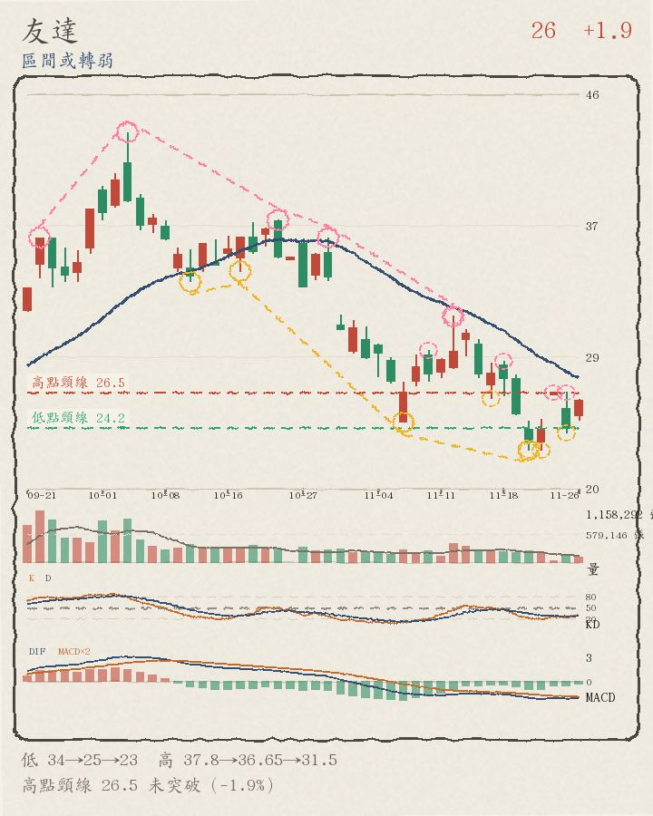
12:31 盤中 24.15（+3.87%），比加權指數強 1.31 個百分點、跌破月線 29.348，離高點頸線 28.9 還差 16.4%，轉折還沒走出明顯方向。
- 月線位置：現價 24.15 在月線 29.348 之下（-17.7%）；5 日線 26.25 也在月線之下（短均在下）；月線向下
- 量能：以已過交易時間推估，今天成交量約是 20 日均量的 0.92 倍（量平），比 20 日均量少一些
- 關鍵價位：已跌破前一個轉折低點；高點頸線 28.9 還在現價上方 16.4%；前一交易日高點 24.6（低於 1.8%）；今天盤中高點 24.75（低於 2.4%）；今天盤中低點 22.7（高於 6.4%）
- 轉折結構：低點 33.75、34.45、24.55 與高點 37.8、36.65、31.5 都沒有明顯遞增，屬於區間震盪或轉弱；還沒確認的轉折低點 11-17 26.1、11-20 22.7；還沒確認的轉折高點 11-12 31.5、11-18 28.55（圖上虛線小圈）
富邦金 2881 上市
131 -5.5（-4.03%）
區間或轉弱 盤中成交值 43 億・全榜第 50 名（上市第 39 名）・相對大盤 -6.59
好條件 0/7：無
不好條件 6/7：跌破前低、今日下跌、相對大盤弱、在月線之下、跌破昨日低點、月線下彎

12:31 盤中 131（-4.03%），比加權指數弱 6.59 個百分點、跌破月線 154.95，離高點頸線 159.83 還差 18.0%，轉折還沒走出明顯方向。
- 月線位置：現價 131 在月線 154.95 之下（-15.5%）；5 日線 147.2 也在月線之下（短均在下）；月線向下
- 量能：以已過交易時間推估，今天成交量約是 20 日均量的 1.88 倍（爆量），比 20 日均量大不少；下跌卻量增，量價背離
- 關鍵價位：已跌破前一個轉折低點；高點頸線 159.83 還在現價上方 18.0%；前一交易日高點 145.5（低於 10.0%）；今天盤中高點 134.5（低於 2.6%）；今天盤中低點 125（高於 4.8%）
- 轉折結構：低點 147.5、153.5、140 與高點 164、164、163.5 都沒有明顯遞增，屬於區間震盪或轉弱；還沒確認的轉折低點 11-17 145、11-20 134；還沒確認的轉折高點 11-05 159.5、11-13 163.5（圖上虛線小圈）
中華電 2412 上市
166 +3.5（+2.15%）
高點墊高、底部不穩 盤中成交值 42.79 億・全榜第 51 名（上市第 40 名）・相對大盤 -0.41
好條件 4/7：站上月線、月線向上、頭頭高、攻擊量（量增＋上漲）
不好條件 1/7：相對大盤弱
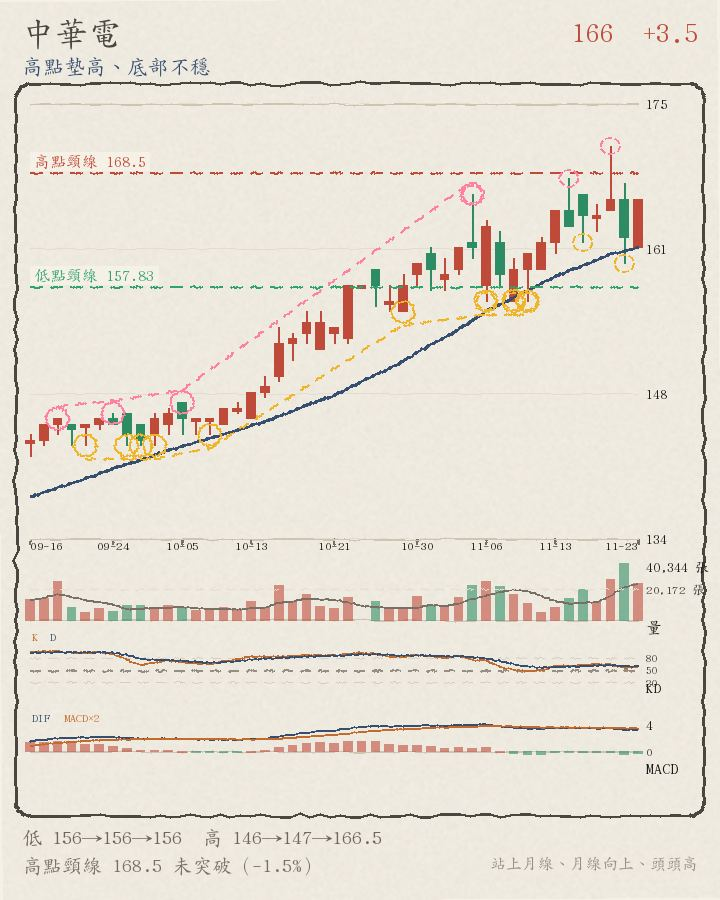
12:31 盤中 166（+2.15%），比加權指數弱 0.41 個百分點、站上月線 161.15，離高點頸線 168.5 還差 1.5%，高點還在墊高（但底部沒同步墊高）。
- 月線位置：現價 166 在月線 161.15 之上（+3.0%）；5 日線 164.2 也在月線之上（短均在上）；月線向上
- 量能：以已過交易時間推估，今天成交量約是 20 日均量的 2.13 倍（爆量），比 20 日均量大不少；上漲又量增，量價配合
- 關鍵價位：高點頸線 168.5 還沒突破，差 1.5%；前一交易日高點 167.5（低於 0.9%）；今天盤中高點 166（高於 0.0%）；今天盤中低點 161.5（高於 2.8%）
- 轉折結構：高點 146、147、166.5 墊高（頭頭高），但低點 156.5、156.5、156.5 沒有同步墊高；還沒確認的轉折低點 11-17 162、11-20 160；還沒確認的轉折高點 11-16 168、11-19 171（圖上虛線小圈）
長榮 2603 上市
233.5 +0.5（+0.21%）
區間或轉弱 盤中成交值 40.7 億・全榜第 52 名（上市第 41 名）・相對大盤 -2.35
好條件 1/7：攻擊量（量增＋上漲）
不好條件 4/7：跌破前低、相對大盤弱、在月線之下、月線下彎
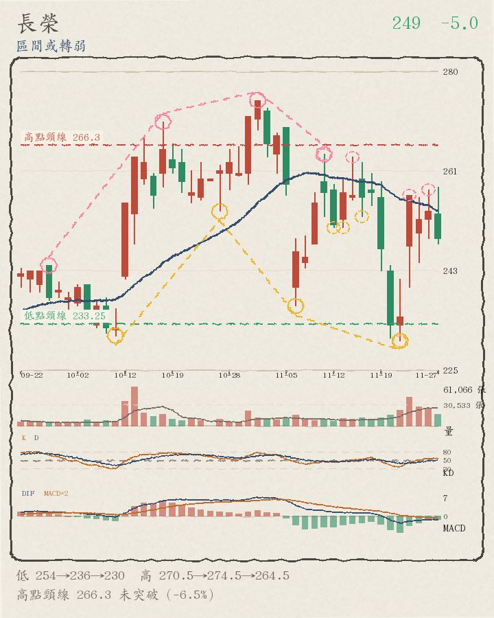
12:31 盤中 233.5（+0.21%），比加權指數弱 2.35 個百分點、跌破月線 257.5，離高點頸線 268.6 還差 13.1%，轉折還沒走出明顯方向。
- 月線位置：現價 233.5 在月線 257.5 之下（-9.3%）；5 日線 250.2 也在月線之下（短均在下）；月線向下
- 量能：以已過交易時間推估，今天成交量約是 20 日均量的 2.10 倍（爆量），比 20 日均量大不少；上漲又量增，量價配合
- 關鍵價位：已跌破前一個轉折低點；高點頸線 268.6 還在現價上方 13.1%；前一交易日高點 244（低於 4.3%）；今天盤中高點 241.5（低於 3.3%）；今天盤中低點 230（高於 1.5%）
- 轉折結構：低點 231、254、236.5 與高點 270.5、274.5、264.5 都沒有明顯遞增，屬於區間震盪或轉弱；還沒確認的轉折低點 11-17 253、11-20 230.5；還沒確認的轉折高點 11-11 264.5、11-16 264（圖上虛線小圈）
高力 8996 上市
848 -75.0（-8.13%）
區間或轉弱 盤中成交值 40.63 億・全榜第 53 名（上市第 42 名）・相對大盤 -10.69
好條件 0/7：無
不好條件 6/7：跌破前低、今日下跌、相對大盤弱、在月線之下、跌破昨日低點、月線下彎
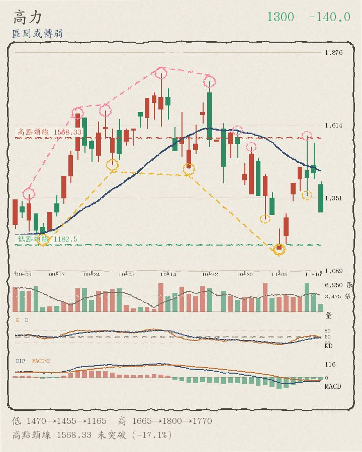
12:31 盤中 848（-8.13%），比加權指數弱 10.69 個百分點、跌破月線 1346.15，離高點頸線 1785 還差 52.5%，轉折還沒走出明顯方向。
- 月線位置：現價 848 在月線 1346.15 之下（-37.0%）；5 日線 1110.6 也在月線之下（短均在下）；月線向下
- 量能：以已過交易時間推估，今天成交量約是 20 日均量的 1.49 倍（量增），比 20 日均量大不少；下跌卻量增，量價背離
- 關鍵價位：已跌破前一個轉折低點；高點頸線 1785 還在現價上方 52.5%；前一交易日高點 923（低於 8.1%）；今天盤中高點 878（低於 3.4%）；今天盤中低點 831（高於 2.0%）
- 轉折結構：低點 1470、1455、1165 與高點 1800、1770、1575 都沒有明顯遞增，屬於區間震盪或轉弱；還沒確認的轉折低點 11-12 1360、11-20 923；還沒確認的轉折高點 11-12 1575（圖上虛線小圈）
騰輝電子-KY 6672 上市
355 +10.5（+3.05%）
區間或轉弱 盤中成交值 38.25 億・全榜第 54 名（上市第 43 名）・相對大盤 +0.49
好條件 1/7：攻擊量（量增＋上漲）
不好條件 3/7：跌破前低、在月線之下、月線下彎

12:31 盤中 355（+3.05%），比加權指數強 0.49 個百分點、跌破月線 489.15，離高點頸線 547 還差 35.1%，轉折還沒走出明顯方向。
- 月線位置：現價 355 在月線 489.15 之下（-27.4%）；5 日線 397.3 也在月線之下（短均在下）；月線向下
- 量能：以已過交易時間推估，今天成交量約是 20 日均量的 1.40 倍（量增），比 20 日均量大不少；上漲又量增，量價配合
- 關鍵價位：已跌破前一個轉折低點；高點頸線 547 還在現價上方 35.1%；前一交易日高點 373（低於 4.8%）；今天盤中高點 369.5（低於 3.9%）；今天盤中低點 317.5（高於 11.8%）
- 轉折結構：低點 285、532、429 與高點 677、552、577 都沒有明顯遞增，屬於區間震盪或轉弱；還沒確認的轉折低點 11-12 488、11-20 328.5；還沒確認的轉折高點 11-10 542、11-12 577（圖上虛線小圈）
緯創 3231 上市
149 +2.0（+1.36%）
區間或轉弱 盤中成交值 37.86 億・全榜第 55 名（上市第 44 名）・相對大盤 -1.20
好條件 0/7：無
不好條件 4/7：跌破前低、相對大盤弱、在月線之下、月線下彎

12:31 盤中 149（+1.36%），比加權指數弱 1.20 個百分點、跌破月線 172.275，離高點頸線 177.75 還差 16.2%，轉折還沒走出明顯方向。
- 月線位置：現價 149 在月線 172.275 之下（-13.5%）；5 日線 156.2 也在月線之下（短均在下）；月線向下
- 量能：以已過交易時間推估，今天成交量約是 20 日均量的 1.05 倍（量平），比 20 日均量大一些
- 關鍵價位：已跌破前一個轉折低點；高點頸線 177.75 還在現價上方 16.2%；前一交易日高點 153（低於 2.6%）；今天盤中高點 154（低於 3.2%）；今天盤中低點 143（高於 4.2%）
- 轉折結構：低點 182.5、173.5、152 與高點 194.5、199.5、181 都沒有明顯遞增，屬於區間震盪或轉弱；還沒確認的轉折低點 11-17 153、11-20 145；還沒確認的轉折高點 11-12 181、11-19 164（圖上虛線小圈）
旺宏 2337 上市
62.4 +3.5（+5.94%）
區間或轉弱 盤中成交值 37.57 億・全榜第 56 名（上市第 45 名）・相對大盤 +3.38
好條件 1/7：攻擊量（量增＋上漲）
不好條件 3/7：跌破前低、在月線之下、月線下彎

12:31 盤中 62.4（+5.94%），比加權指數強 3.38 個百分點、跌破月線 83.6，離高點頸線 86.7 還差 28.0%，轉折還沒走出明顯方向。
- 月線位置：現價 62.4 在月線 83.6 之下（-25.4%）；5 日線 67.46 也在月線之下（短均在下）；月線向下
- 量能：以已過交易時間推估，今天成交量約是 20 日均量的 1.61 倍（爆量），比 20 日均量大不少；上漲又量增，量價配合
- 關鍵價位：已跌破前一個轉折低點；高點頸線 86.7 還在現價上方 28.0%；前一交易日高點 62.5（低於 0.2%）；今天盤中高點 63.5（低於 1.7%）；今天盤中低點 57.4（高於 8.7%）
- 轉折結構：低點 114.5、99.2、71.8 與高點 123、107.5、88.2 都沒有明顯遞增，屬於區間震盪或轉弱；還沒確認的轉折低點 11-12 78.2、11-20 58.6；還沒確認的轉折高點 11-12 85.2、11-18 74.8（圖上虛線小圈）
禾伸堂 3026 上市
328.5 +4.5（+1.39%）
區間或轉弱 盤中成交值 35.09 億・全榜第 57 名（上市第 46 名）・相對大盤 -1.17
好條件 1/7：攻擊量（量增＋上漲）
不好條件 4/7：跌破前低、相對大盤弱、在月線之下、月線下彎

12:31 盤中 328.5（+1.39%），比加權指數弱 1.17 個百分點、跌破月線 551.7，離高點頸線 847 還差 61.2%，轉折還沒走出明顯方向。
- 月線位置：現價 328.5 在月線 551.7 之下（-40.5%）；5 日線 391.9 也在月線之下（短均在下）；月線向下
- 量能：以已過交易時間推估，今天成交量約是 20 日均量的 1.21 倍（量增），比 20 日均量大不少；上漲又量增，量價配合
- 關鍵價位：已跌破前一個轉折低點；高點頸線 847 還在現價上方 61.2%；前一交易日高點 335（低於 1.9%）；今天盤中高點 341（低於 3.7%）；今天盤中低點 294.5（高於 11.5%）
- 轉折結構：低點 726、704、475.5 與高點 888、859、571 都沒有明顯遞增，屬於區間震盪或轉弱；還沒確認的轉折低點 11-06 475.5、11-20 324；還沒確認的轉折高點 11-12 571（圖上虛線小圈）
台新新光金 2887 上市
32.45 -1.5（-4.42%）
區間或轉弱 盤中成交值 33.47 億・全榜第 58 名（上市第 47 名）・相對大盤 -6.98
好條件 0/7：無
不好條件 6/7：跌破前低、今日下跌、相對大盤弱、在月線之下、跌破昨日低點、月線下彎
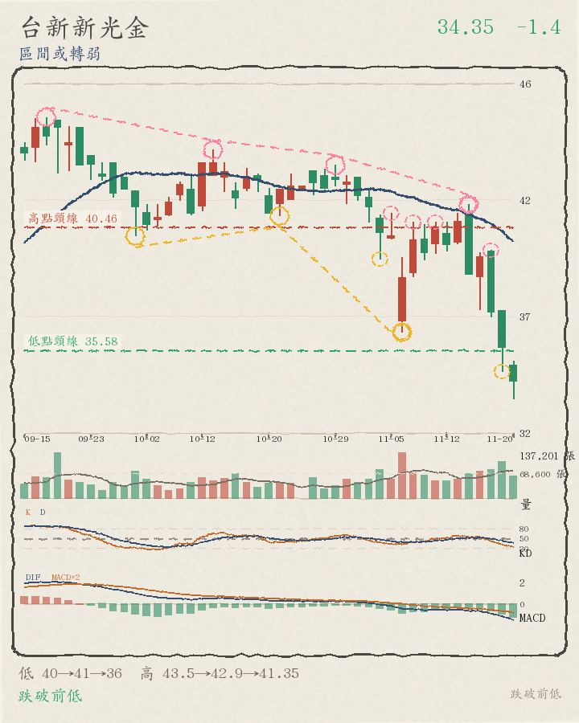
12:31 盤中 32.45（-4.42%），比加權指數弱 6.98 個百分點、跌破月線 39.883，離高點頸線 40.46 還差 19.8%，轉折還沒走出明顯方向。
- 月線位置：現價 32.45 在月線 39.883 之下（-18.6%）；5 日線 36.93 也在月線之下（短均在下）；月線向下
- 量能：以已過交易時間推估，今天成交量約是 20 日均量的 1.98 倍（爆量），比 20 日均量大不少；下跌卻量增，量價背離
- 關鍵價位：已跌破前一個轉折低點；高點頸線 40.46 還在現價上方 19.8%；前一交易日高點 35.15（低於 7.7%）；今天盤中高點 33.95（低於 4.4%）；今天盤中低點 31.15（高於 4.2%）
- 轉折結構：低點 40.1、40.9、36.3 與高點 43.5、42.9、41.35 都沒有明顯遞增，屬於區間震盪或轉弱；還沒確認的轉折低點 11-06 36.3、11-20 33.5；還沒確認的轉折高點 11-16 41.35、11-18 39.55（圖上虛線小圈）
頎邦 6147 上櫃
123.5 +7.5（+6.47%）
區間或轉弱 盤中成交值 32.64 億・全榜第 59 名（上櫃第 12 名）・相對大盤 +3.91
好條件 1/7：攻擊量（量增＋上漲）
不好條件 3/7：跌破前低、在月線之下、月線下彎
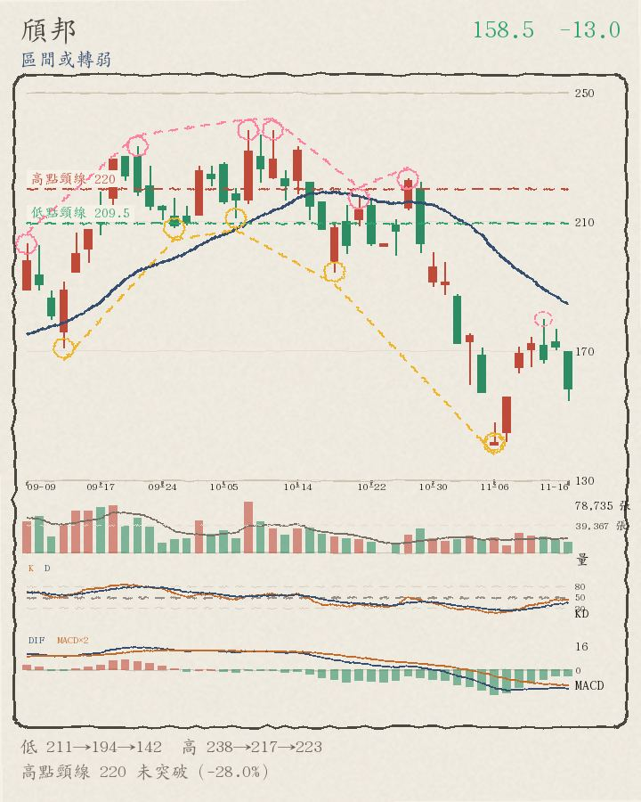
12:31 盤中 123.5（+6.47%），比加權指數強 3.91 個百分點、跌破月線 169.5，離高點頸線 220 還差 43.9%，轉折還沒走出明顯方向。
- 月線位置：現價 123.5 在月線 169.5 之下（-27.1%）；5 日線 136.6 也在月線之下（短均在下）；月線向下
- 量能：以已過交易時間推估，今天成交量約是 20 日均量的 1.57 倍（爆量），比 20 日均量大不少；上漲又量增，量價配合
- 關鍵價位：已跌破前一個轉折低點；高點頸線 220 還在現價上方 43.9%；前一交易日高點 117.5（高於 5.1%）；今天盤中高點 126（低於 2.0%）；今天盤中低點 108.5（高於 13.8%）
- 轉折結構：低點 211、194.5、142 與高點 217、223、180 都沒有明顯遞增，屬於區間震盪或轉弱；還沒確認的轉折低點 11-06 142、11-20 116；還沒確認的轉折高點 11-12 180（圖上虛線小圈）
國泰金 2882 上市
94.2 -2.7（-2.79%）
區間或轉弱 盤中成交值 31.75 億・全榜第 60 名（上市第 48 名）・相對大盤 -5.35
好條件 0/7：無
不好條件 6/7：跌破前低、今日下跌、相對大盤弱、在月線之下、跌破昨日低點、月線下彎

12:31 盤中 94.2（-2.79%），比加權指數弱 5.35 個百分點、跌破月線 111.27，離高點頸線 116.17 還差 18.9%，轉折還沒走出明顯方向。
- 月線位置：現價 94.2 在月線 111.27 之下（-15.3%）；5 日線 106.28 也在月線之下（短均在下）；月線向下
- 量能：以已過交易時間推估，今天成交量約是 20 日均量的 1.50 倍（爆量），比 20 日均量大不少；下跌卻量增，量價背離
- 關鍵價位：已跌破前一個轉折低點；高點頸線 116.17 還在現價上方 18.9%；前一交易日高點 103（低於 8.5%）；今天盤中高點 97.5（低於 3.4%）；今天盤中低點 91.5（高於 3.0%）
- 轉折結構：低點 110、110、101 與高點 117.5、117.5、115.5 都沒有明顯遞增，屬於區間震盪或轉弱；還沒確認的轉折低點 11-17 106、11-20 95.5；還沒確認的轉折高點 11-09 113.5、11-16 115.5（圖上虛線小圈）
華經 2468 上市
67.9 -1.2（-1.74%）
上升趨勢（底底高＋頭頭高） 盤中成交值 31.63 億・全榜第 61 名（上市第 49 名）・相對大盤 -4.30
好條件 5/7：站上月線、月線向上、底底高、頭頭高、突破頸線
不好條件 2/7：今日下跌、相對大盤弱

12:31 盤中 67.9（-1.74%），比加權指數弱 4.30 個百分點、站上月線 62.79，已突破高點頸線 34.6，轉折結構仍是底底高＋頭頭高。
- 月線位置：現價 67.9 在月線 62.79 之上（+8.1%）；5 日線 70.66 也在月線之上（短均在上）；月線向上
- 量能：以已過交易時間推估，今天成交量約是 20 日均量的 1.75 倍（爆量），比 20 日均量大不少；下跌卻量增，量價背離
- 關鍵價位：高點頸線 34.6 已站上；前一交易日高點 69.1（低於 1.7%）；今天盤中高點 74.6（低於 9.0%）；今天盤中低點 66.5（高於 2.1%）
- 轉折結構：低點 40.5、49.6、53.1 一路墊高、高點 34.2、49.45、82.1 也一路墊高，是底底高＋頭頭高；還沒確認的轉折低點 11-06 53.1、11-20 59.5；還沒確認的轉折高點 11-11 71.2、11-17 82.1（圖上虛線小圈）
啟碁 6285 上市
176 +4.0（+2.33%）
區間或轉弱 盤中成交值 30.53 億・全榜第 62 名（上市第 50 名）・相對大盤 -0.23
好條件 1/7：攻擊量（量增＋上漲）
不好條件 3/7：相對大盤弱、在月線之下、月線下彎
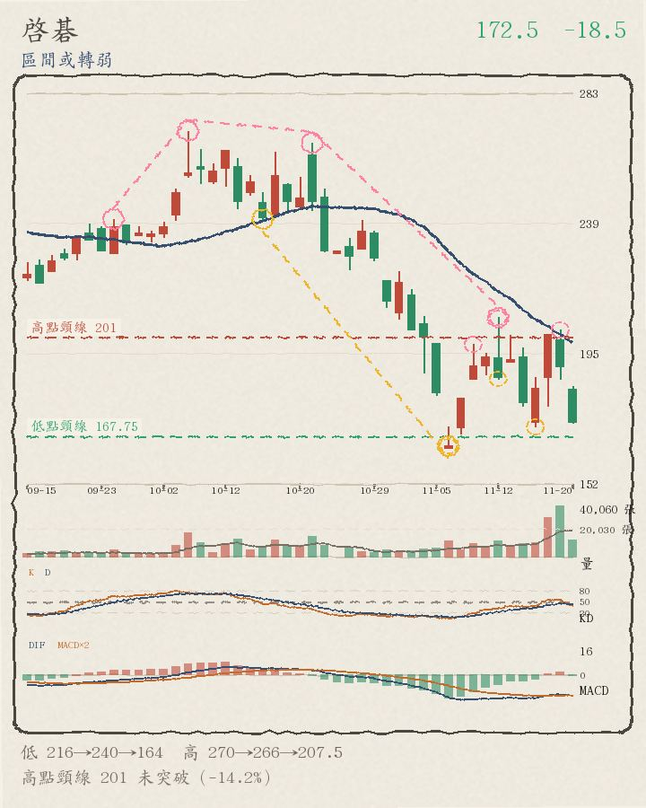
12:31 盤中 176（+2.33%），比加權指數弱 0.23 個百分點、跌破月線 199.075，離高點頸線 201 還差 12.4%，轉折還沒走出明顯方向。
- 月線位置：現價 176 在月線 199.075 之下（-11.6%）；5 日線 185.6 也在月線之下（短均在下）；月線向下
- 量能：以已過交易時間推估，今天成交量約是 20 日均量的 2.13 倍（爆量），比 20 日均量大不少；上漲又量增，量價配合
- 關鍵價位：高點頸線 201 還沒突破，差 12.4%；前一交易日高點 184.5（低於 4.6%）；今天盤中高點 179.5（低於 1.9%）；今天盤中低點 160（高於 10.0%）
- 轉折結構：低點 240.5、164.5、171 與高點 270、266、207.5 都沒有明顯遞增，屬於區間震盪或轉弱；還沒確認的轉折低點 11-17 171、11-20 172；還沒確認的轉折高點 11-12 207.5、11-19 203.5（圖上虛線小圈）
欣銓 3264 上櫃
141 +5.0（+3.68%）
區間或轉弱 盤中成交值 24.25 億・全榜第 63 名（上櫃第 13 名）・相對大盤 +1.12
好條件 1/7：攻擊量（量增＋上漲）
不好條件 3/7：跌破前低、在月線之下、月線下彎
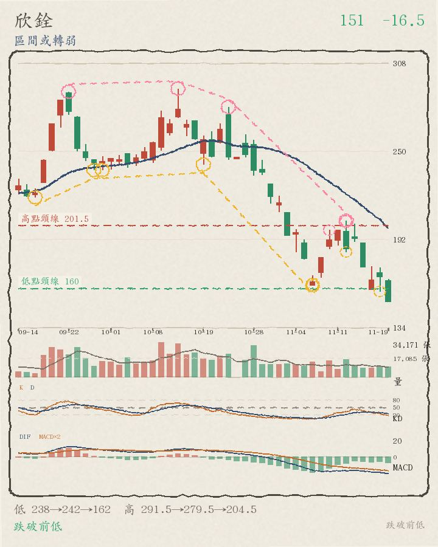
12:31 盤中 141（+3.68%），比加權指數強 1.12 個百分點、跌破月線 194.275，離高點頸線 201.5 還差 30.0%，轉折還沒走出明顯方向。
- 月線位置：現價 141 在月線 194.275 之下（-27.4%）；5 日線 158.8 也在月線之下（短均在下）；月線向下
- 量能：以已過交易時間推估，今天成交量約是 20 日均量的 1.66 倍（爆量），比 20 日均量大不少；上漲又量增，量價配合
- 關鍵價位：已跌破前一個轉折低點；高點頸線 201.5 還在現價上方 30.0%；前一交易日高點 141.5（低於 0.4%）；今天盤中高點 143.5（低於 1.7%）；今天盤中低點 127（高於 11.0%）
- 轉折結構：低點 238、241.5、162 與高點 291.5、279.5、204.5 都沒有明顯遞增，屬於區間震盪或轉弱；還沒確認的轉折低點 11-12 184、11-20 136；還沒確認的轉折高點 11-10 198.5、11-12 204.5（圖上虛線小圈）
宜鼎 5289 上櫃
776 +70.0（+9.92%）
區間或轉弱 盤中成交值 24.23 億・全榜第 64 名（上櫃第 14 名）・相對大盤 +7.36
好條件 1/7：攻擊量（量增＋上漲）
不好條件 3/7：跌破前低、在月線之下、月線下彎
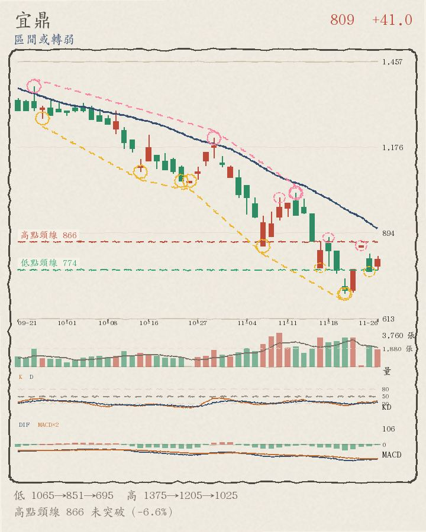
12:31 盤中 776（+9.92%），比加權指數強 7.36 個百分點、跌破月線 972.9，離高點頸線 1017.5 還差 23.7%，轉折還沒走出明顯方向。
- 月線位置：現價 776 在月線 972.9 之下（-20.2%）；5 日線 803.6 也在月線之下（短均在下）；月線向下
- 量能：以已過交易時間推估，今天成交量約是 20 日均量的 1.96 倍（爆量），比 20 日均量大不少；上漲又量增，量價配合
- 關鍵價位：已跌破前一個轉折低點；高點頸線 1017.5 還在現價上方 23.7%；前一交易日高點 745（高於 4.2%）；今天盤中高點 776（高於 0.0%）；今天盤中低點 699（高於 11.0%）
- 轉折結構：低點 1065、1065、851 與高點 1375、1205、1025 都沒有明顯遞增，屬於區間震盪或轉弱；還沒確認的轉折低點 11-17 780、11-20 695；還沒確認的轉折高點 11-12 1025、11-18 879（圖上虛線小圈）
精測 6510 上櫃
2305 -60.0（-2.54%）
區間或轉弱 盤中成交值 22.68 億・全榜第 65 名（上櫃第 15 名）・相對大盤 -5.10
好條件 0/7：無
不好條件 5/7：今日下跌、相對大盤弱、在月線之下、跌破昨日低點、月線下彎

12:31 盤中 2305（-2.54%），比加權指數弱 5.10 個百分點、跌破月線 2823.5，離高點頸線 3542.5 還差 34.9%，轉折還沒走出明顯方向。
- 月線位置：現價 2305 在月線 2823.5 之下（-18.4%）；5 日線 2728 也在月線之下（短均在下）；月線向下
- 量能：以已過交易時間推估，今天成交量約是 20 日均量的 1.59 倍（爆量），比 20 日均量大不少；下跌卻量增，量價背離
- 關鍵價位：高點頸線 3542.5 還沒突破，差 34.9%；前一交易日高點 2365（低於 2.5%）；今天盤中高點 2335（低於 1.3%）；今天盤中低點 2130（高於 8.2%）
- 轉折結構：低點 3000、2825、2250 與高點 3580、3345、3505 都沒有明顯遞增，屬於區間震盪或轉弱；還沒確認的轉折低點 11-18 2625、11-20 2365；還沒確認的轉折高點 11-13 3505、11-18 2990（圖上虛線小圈）
華星光 4979 上櫃
255 -11.0（-4.14%）
區間或轉弱 盤中成交值 22.4 億・全榜第 66 名（上櫃第 16 名）・相對大盤 -6.70
好條件 0/7：無
不好條件 6/7：跌破前低、今日下跌、相對大盤弱、在月線之下、跌破昨日低點、月線下彎

12:31 盤中 255（-4.14%），比加權指數弱 6.70 個百分點、跌破月線 380.5，轉折還沒走出明顯方向。
- 月線位置：現價 255 在月線 380.5 之下（-33.0%）；5 日線 309.9 也在月線之下（短均在下）；月線向下
- 量能：以已過交易時間推估，今天成交量約是 20 日均量的 2.02 倍（爆量），比 20 日均量大不少；下跌卻量增，量價背離
- 關鍵價位：前一交易日高點 269（低於 5.2%）；今天盤中高點 263.5（低於 3.2%）；今天盤中低點 239.5（高於 6.5%）
- 轉折結構：低點 545、445、312 與高點 588、531、410.5 都沒有明顯遞增，屬於區間震盪或轉弱；還沒確認的轉折低點 11-06 312、11-20 266；還沒確認的轉折高點 11-12 410.5、11-18 340.5（圖上虛線小圈）
世界 5347 上櫃
109.5 +3.0（+2.82%）
區間或轉弱 盤中成交值 21.41 億・全榜第 67 名（上櫃第 17 名）・相對大盤 +0.26
好條件 1/7：攻擊量（量增＋上漲）
不好條件 3/7：跌破前低、在月線之下、月線下彎
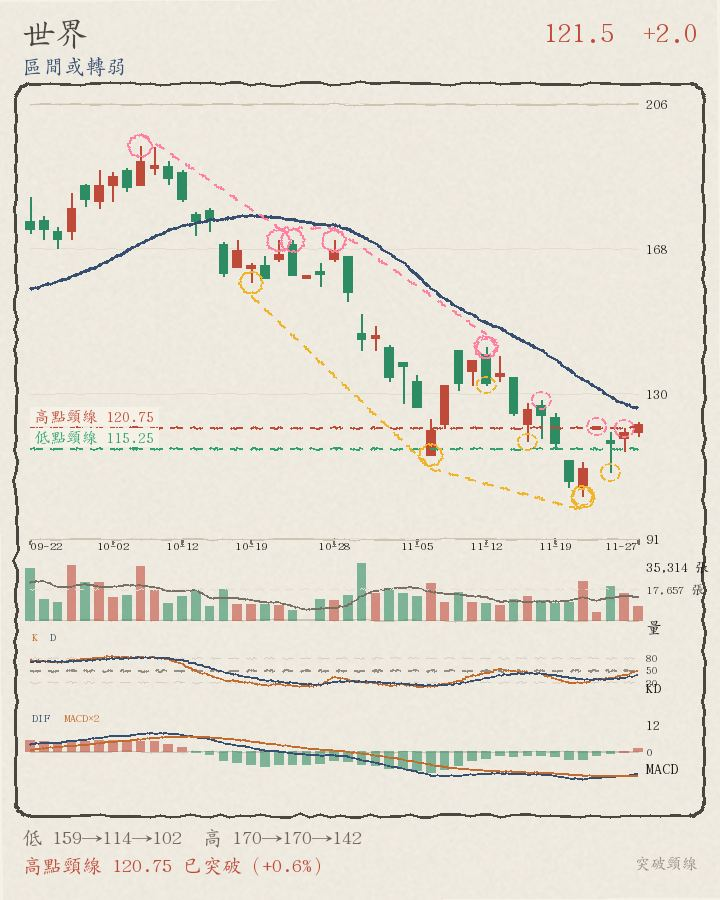
12:31 盤中 109.5（+2.82%），比加權指數強 0.26 個百分點、跌破月線 136，離高點頸線 141.5 還差 22.6%，轉折還沒走出明顯方向。
- 月線位置：現價 109.5 在月線 136 之下（-19.5%）；5 日線 119.4 也在月線之下（短均在下）；月線向下
- 量能：以已過交易時間推估，今天成交量約是 20 日均量的 1.71 倍（爆量），比 20 日均量大不少；上漲又量增，量價配合
- 關鍵價位：已跌破前一個轉折低點；高點頸線 141.5 還在現價上方 22.6%；前一交易日高點 112（低於 2.2%）；今天盤中高點 111.5（低於 1.8%）；今天盤中低點 102.5（高於 6.8%）
- 轉折結構：低點 152.5、159、113.5 與高點 170、170、142 都沒有明顯遞增，屬於區間震盪或轉弱；還沒確認的轉折低點 11-17 117、11-20 105；還沒確認的轉折高點 11-12 142、11-18 128（圖上虛線小圈）
天品 6199 上櫃
172.5 +3.0（+1.77%）
高點墊高、底部不穩 盤中成交值 21.4 億・全榜第 68 名（上櫃第 18 名）・相對大盤 -0.79
好條件 6/7：站上月線、月線向上、頭頭高、突破頸線、攻擊量（量增＋上漲）、守住今日高檔（距今日高點 1% 內）
不好條件 2/7：相對大盤弱、貼近今日低點（1% 內）
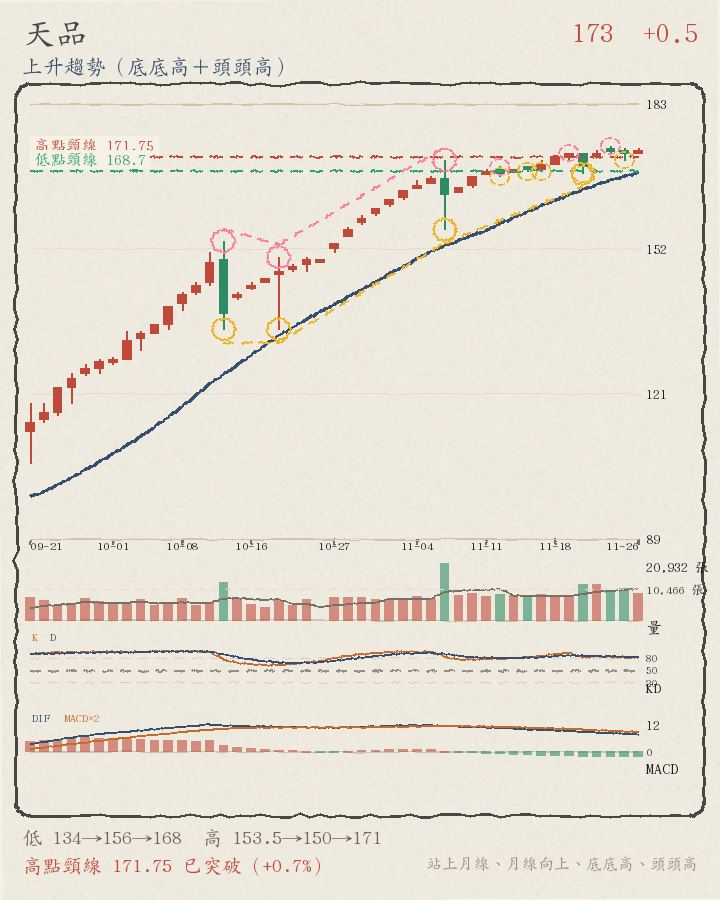
12:31 盤中 172.5（+1.77%），比加權指數弱 0.79 個百分點、站上月線 164.55，已突破高點頸線 171.38，高點還在墊高（但底部沒同步墊高）。
- 月線位置：現價 172.5 在月線 164.55 之上（+4.8%）；5 日線 170.5 也在月線之上（短均在上）；月線向上
- 量能：以已過交易時間推估，今天成交量約是 20 日均量的 1.73 倍（爆量），比 20 日均量大不少；上漲又量增，量價配合
- 關鍵價位：高點頸線 171.38 已站上；前一交易日高點 172.5（高於 0.0%）；今天盤中高點 173（低於 0.3%）；今天盤中低點 171.5（高於 0.6%）
- 轉折結構：高點 153.5、150、171 墊高（頭頭高），但低點 134.5、134.5、156 沒有同步墊高；還沒確認的轉折低點 11-17 168.5、11-20 168；還沒確認的轉折高點 11-19 172.5、11-20 172.5（圖上虛線小圈）
萬潤 6187 上櫃
671 +46.0（+7.36%）
區間或轉弱 盤中成交值 20.46 億・全榜第 69 名（上櫃第 19 名）・相對大盤 +4.80
好條件 2/7：攻擊量（量增＋上漲）、守住今日高檔（距今日高點 1% 內）
不好條件 3/7：跌破前低、在月線之下、月線下彎

12:31 盤中 671（+7.36%），比加權指數強 4.80 個百分點、跌破月線 1005.85，離高點頸線 1445 還差 53.6%，轉折還沒走出明顯方向。
- 月線位置：現價 671 在月線 1005.85 之下（-33.3%）；5 日線 744.2 也在月線之下（短均在下）；月線向下
- 量能：以已過交易時間推估，今天成交量約是 20 日均量的 1.76 倍（爆量），比 20 日均量大不少；上漲又量增，量價配合
- 關鍵價位：已跌破前一個轉折低點；高點頸線 1445 還在現價上方 53.6%；前一交易日高點 641（高於 4.7%）；今天盤中高點 673（低於 0.3%）；今天盤中低點 576（高於 16.5%）
- 轉折結構：低點 1180、1180、864 與高點 1680、1360、1060 都沒有明顯遞增，屬於區間震盪或轉弱；還沒確認的轉折低點 11-06 864、11-20 625；還沒確認的轉折高點 11-12 1060（圖上虛線小圈）
威剛 3260 上櫃
250.5 +15.0（+6.37%）
區間或轉弱 盤中成交值 19.16 億・全榜第 70 名（上櫃第 20 名）・相對大盤 +3.81
好條件 1/7：攻擊量（量增＋上漲）
不好條件 3/7：跌破前低、在月線之下、月線下彎

12:31 盤中 250.5（+6.37%），比加權指數強 3.81 個百分點、跌破月線 306.625，離高點頸線 319.75 還差 21.7%，轉折還沒走出明顯方向。
- 月線位置：現價 250.5 在月線 306.625 之下（-18.3%）；5 日線 263.5 也在月線之下（短均在下）；月線向下
- 量能：以已過交易時間推估，今天成交量約是 20 日均量的 1.34 倍（量增），比 20 日均量大不少；上漲又量增，量價配合
- 關鍵價位：已跌破前一個轉折低點；高點頸線 319.75 還在現價上方 21.7%；前一交易日高點 250（高於 0.2%）；今天盤中高點 254（低於 1.4%）；今天盤中低點 230.5（高於 8.7%）
- 轉折結構：低點 328、328、270 與高點 385.5、378.5、323 都沒有明顯遞增，屬於區間震盪或轉弱；還沒確認的轉折低點 11-17 263、11-20 232.5；還沒確認的轉折高點 11-12 316.5、11-18 288（圖上虛線小圈）